直近1週間の人気フィード
はてなブックマーク数を元に新着優先で並べ替え
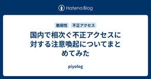
国内で相次ぐ不正アクセスに対する注意喚起についてまとめてみた - piyolog 379 はてなブックマーク - 人気エントリー - テクノロジー
379 はてなブックマーク - 人気エントリー - テクノロジー
2026年10月7日から9日にかけて、個人情報保護委員会、JPCERT/CC、国家サイバー統括室、IPAなどの各機関が、国内組織で相次ぐ不正アクセスによる個人情報の漏えいを受けた注意喚起を公表しました。ここでは関連する情報をまとめます。 BIツールや従業員向けシステムも被害に JPCERT/CCは10月8日に公開した注意喚起で、「2...
13時間前
国内で相次ぐ不正アクセスに対する注意喚起についてまとめてみた 379
piyolog
2026年10月7日から9日にかけて、個人情報保護委員会、JPCERT/CC、国家サイバー統括室、IPAなどの各機関が、国内組織で相次ぐ不正アクセスによる個人情報の漏えいを受けた注意喚起を公表しました。ここでは関連する情報をまとめます。BIツールや従業員向けシステムも被害にJPCERT/CCは10月8日に公開した注意喚起で、「2026年9月前後」に国内組織で不正アクセスによる個人情報等の漏えい被害
13時間前
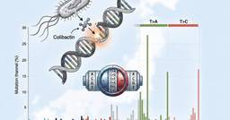
日本人の大腸がん、約半数に“腸内細菌の毒素”が関与 40歳以下の発症は7割 東大・阪大が200人を全ゲノム解析 215はてなブックマーク - 人気エントリー - テクノロジー
2019年にスタートした本連載「Innovative Tech」は、世界中の幅広い分野から最先端の研究論文を独自視点で厳選、解説する。執筆は研究論文メディア「Seamless」（シームレス）を主宰し、日課として数多くの論文に目を通す山下氏が担当。イラストや漫画は、同メディア所属のアーティスト・おね氏が手掛けている。X：＠shi...
1日前

個人情報漏洩が日常になってしまった世界でどうしていくべきか 183 はてなブックマーク - 人気エントリー - テクノロジー
こんにちは！逆瀬川ちゃん (@gyakuse) です！ 今日は個人情報がどんどん流出していく時代に、わたしたちは何をすればいいのかを考えていきたいと思います。 今週だけでも さいきん個人情報の漏洩のニュースが本当に多いです。10月7日から9日にかけては政府機関が相次いで「不正アクセスによる漏洩が続いている」と注意を...
21時間前
SQLite 本体にベクトル検索拡張 vec1 がやってきた 154 はてなブックマーク - 人気エントリー - テクノロジー
はじめに 2026 年 9 月 30 日、SQLite のソースツリーに ext/vec1/ というディレクトリが追加されました。コミットしたのは FTS5 などでおなじみの Dan Kennedy 氏。コミットメッセージはたった 1 行です。 これまで別の場所で開発されていた vec1 が、まるっと SQLite 本体のリポジトリに取り込まれました。本体は vec1...
12時間前
SQLite 本体にベクトル検索拡張 vec1 がやってきた 154 Zennのトレンド
はじめに2026 年 9 月 30 日、SQLite のソースツリーに ext/vec1/ というディレクトリが追加されました。コミットしたのは FTS5 などでおなじみの Dan Kennedy 氏。コミットメッセージはたった 1 行です。Import vec1 sources into directory ext/vec1/ of this project.これまで別の場所で開発されていた v
12時間前

bpmn.io で始める AI-Ready な業務フロー管理 | フューチャー技術ブログ 219 はてなブックマーク - 人気エントリー - テクノロジー
はじめにみなさんは業務フローを書いたことはあるでしょうか。 業務フローは、ある業務を誰がどの順番で進めるかを図にしたものです。申請者が申請を登録し、承認者が承認し、購買担当が発注する、といった手順を担当者ごとのレーンに分け、矢印でつなぎます。システムの開発現場ではグランドデザインや要件定義などの工...
1日前
[ITmedia News] 日本人の大腸がん、約半数に“腸内細菌の毒素”が関与 40歳以下の発症は7割 東大・阪大が200人を全ゲノム解析 215ITmedia 総合記事一覧
東京大学医科学研究所、大阪大学、国立がん研究センター、東京科学大学に所属する研究者らが科学誌「Nature Genetics」で発表した論文「Prevalence and chronology of colibactin-associated mutational processes and their microbiome spectra in Japanese colorectal cance
1日前
ADHDの人は便秘や過敏性腸症候群などの「腸の問題」を抱えやすいことが約200万人の分析で判明 131 GIGAZINE
注意欠如多動症(ADHD)は不注意や衝動性を特徴とする発達障害であり、世界全体では成人の2～4％がADHDを持っているといわれています。イギリスのウォーリック大学が主導した研究では、ADHDを持つ人は便秘や過敏性腸症候群(IBS)、下痢といった胃腸症状を経験する可能性が著しく高いとの結果が示されました。続きを読む...
15時間前
AI駆動開発の時代になったのでトヨタ生産方式から見直す 159 はてなブックマーク - 人気エントリー - テクノロジー
2026-10-09 AI駆動開発勉強会 名古屋支部#2 の発表資料です。
2日前
[ITmedia News] JR東日本、「えきねっと」「ビューカード」などで漏えいか メルアドなど最大609万件 IDCFへの不正アクセスで【追記あり】 155ITmedia 総合記事一覧
JR東日本は10月9日、列車予約サービス「えきねっと」と会員制サービス「大人の休日倶楽部」のにおいて、最大約206万件の利用者情報が漏えいした可能性があると発表した。7日にIDCフロンティアが公表した不正アクセスが原因で、メール配信用の外部サービスに保存していた利用者の情報が第三者に閲覧・取得された恐れがあるという。
2日前
Readest — 無料オープンソースのEPUB・PDFリーダー、全プラットフォーム対応 94 Menthas #all
Readestは無料のオープンソース電子書籍リーダーです。macOS、Windows、Linux、Android、iOS、Webでハイライト、メモ、分割画面読書、音声読み上げ（TTS）、クラウド同期を活用できます。
1時間前
Readest — 無料オープンソースのEPUB・PDFリーダー、全プラットフォーム対応 94 はてなブックマーク - 人気エントリー - テクノロジー
消化し、洞察を得るReadestは無料のオープンソースEPUB・PDFリーダーで、深い没入型読書のために設計されています。macOS、Windows、Linux、Android、iOS、Web、KOReader・CrossPoint端末でハイライト、メモ、分割画面読書、テキスト読み上げ、クラウド同期をお楽しみください。
20時間前
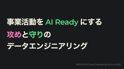
事業活動を AI Ready にする攻めと守りのデータエンジニアリング / data-engineering-for-ai-ready-business 84 Menthas #all
Data Engineering Summit 2026（2026-10-09）で発表した資料です。 https://conference.findy-code.io/conferences/data-engineering-summit26/35/sessions/758AI は誰でも…
18時間前
OpenAIとAnthropicに新ライバル出現。中国ではなく地元アメリカから | ギズモード・ジャパン 84 Menthas #all
アメリカのAI勢力図が変わるかもしれません。無名のAIスタートアップが、「企業が自前のAIを作れる」サービスを強みに、大手AI企業のドル箱である法人ビジネスに挑もうとしています。いまやAI企業の収入源は法人向けプランにOpenAIとAnth
18時間前
bpmn.io で始める AI-Ready な業務フロー管理 | フューチャー技術ブログ 219 企業テックブログRSS
業務フローの記述形式に BPMN 2.0 を採用し、bpmn.io のエディタ・bpmnlint による静的解析・生成 AI によるレビュー・bpmn-to-image での画像化で管理する方法を紹介します。
3日前
bpmn.io で始める AI-Ready な業務フロー管理 | フューチャー技術ブログ 219 AI情報RSS
業務フローの記述形式に BPMN 2.0 を採用し、bpmn.io のエディタ・bpmnlint による静的解析・生成 AI によるレビュー・bpmn-to-image での画像化で管理する方法を紹介します。
3日前
bpmn.io で始める AI-Ready な業務フロー管理 219 フューチャー技術ブログ
業務フローの記述形式に BPMN 2.0 を採用し、bpmn.io のエディタ・bpmnlint による静的解析・生成 AI によるレビュー・bpmn-to-image での画像化で管理する方法を紹介します。
3日前
ChatGPTに対して些細なミスでも執拗に詰めるパワハラを続けていたら、完全に萎縮されて1つの回答に70分かかるようになった→AIに対するパワハラが人間にも通じると話題に 70 はてなブックマーク - 人気エントリー - テクノロジー
ChatGPTに対して些細なミスでも執拗に詰めるパワハラを続けていたら、完全に萎縮されて1つの回答に70分かかるようになった→AIに対するパワハラが人間にも通じると話題に
5時間前
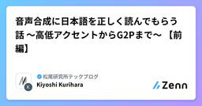
音声合成に日本語を正しく読んでもらう話 〜高低アクセントからG2Pまで〜 【前編】 69 はてなブックマーク - 人気エントリー - テクノロジー
株式会社 松尾研究所で働いている栗原です。 以前、「音声合成の日本語化手法が一般化した話」を書きました。 今回は、日本語の難しさと、それを音声合成に扱わせる難しさ、その課題に取り組むために考案した日本語言語処理部（G2P: Grapheme-to-Phoneme）について、前後編に分けて解説していきます。 専門家・理系の方...
15時間前

[ITmedia News] 「お前たちのクラウドはわれわれのもの」 IDCFクラウドの管理画面に出た攻撃者のメッセージ 内容に運営元は 106ITmedia 総合記事一覧
ランサムウェア攻撃を受けた「IDCFクラウド」を巡り、攻撃者を名乗る人物のメッセージが管理コンソールに表示されたとする画像が、10月7日からX上で拡散している。画像には、攻撃者によるものとみられる英語のメッセージや、被害規模を示す具体的な数字が記されている。ITmedia NEWSは、画像の内容について運営元のIDCフロンティアに聞いた。
1日前

さくらインターネット、GPU専有によりトークン消費量を気にせず定額で利用できる「さくらのAI Engineプライベートエディション」提供開始を発表 179 Publickey
さくらインターネットは、GPUサーバ上で基盤モデルを展開しマネージドサービスとして提供する「さくらのAI Engine」を、企業がGPUを専有して使える「さくらのAI Engine プライベートエディション」の提供開始を発表しました。 お知...
3日前
若手エンジニアに必要だと感じた「AIを使う力」 100 はてなブックマーク - 人気エントリー - テクノロジー
若手エンジニアに必要だと感じた「AIを使う力」 はじめに 私は現在、JavaやReactを使った金融系Webアプリの開発に携わっています。開発経験はまだ浅く、業務では分からないことに遭遇する場面も多くあります。そのため、調査、実装、文章作成、レビューなど、さまざまな場面でAIを使ってきました。私自身、AIを使うこと...
2日前
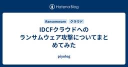
IDCFクラウドへのランサムウェア攻撃についてまとめてみた 326 piyolog
2026年10月7日、IDCフロンティアは、同社が提供するクラウドサービス「IDCFクラウド」の一部のシステムが第三者からのランサムウェア攻撃を受け、障害が発生していると公表しました。ここでは関連する情報をまとめます。東日本リージョン1の4ゾーンで仮想サーバーが停止IDCフロンティアは10月7日の第1報と第2報に続き、10月8日21時2分の第3報で、障害の発生は10月7日午前3時40分頃で継続中と
3日前
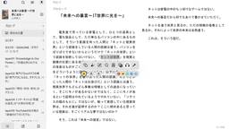
無料のオープンソースEPUB・PDFリーダー「Readest」、Windows・Linux・macOS・Android・iOS・ブラウザ・KOReaderでハイライト・メモ・分割画面読書・AIテキスト読み上げ・AI自動翻訳・クラウド同期が可能 57 Menthas #all
電子書籍のハイライトやメモだけでなく、2冊を横並びにする分割画面読書・AI音声読み上げ・文章や書籍全体の翻訳・端末間のクラウド同期まで利用でき、Windows・Linux・macOS・Android・iOS・ブラウザに対応する「Readest」が公開されています。
4分前
Google Chrome、同意なしで4GBのローカルAIモデルをダウンロードさせている | ギズモード・ジャパン 57 はてなブックマーク - 人気エントリー - テクノロジー
2026年5月19日の記事を編集して再掲載しています。 Google Chromeが、ユーザーの同意なしに約4GBものAIモデルをデバイスに自動的にダウンロード・保存させているという件が判明しました。「OptGuideOnDeviceModel」というフォルダの中に、こっそり4GBも忍び込ませいるようです。 「That Privacy Guy（プライバシー・ガイ...
7時間前
無料のオープンソースEPUB・PDFリーダー「Readest」、Windows・Linux・macOS・Android・iOS・ブラウザ・KOReaderでハイライト・メモ・分割画面読書・AIテキスト読み上げ・AI自動翻訳・クラウド同期が可能 57 はてなブックマーク - 人気エントリー - テクノロジー
電子書籍のハイライトやメモだけでなく、2冊を横並びにする分割画面読書・AI音声読み上げ・文章や書籍全体の翻訳・端末間のクラウド同期まで利用でき、Windows・Linux・macOS・Android・iOS・ブラウザに対応する「Readest」が公開されています。 Readest — 無料オープンソースのEPUB・PDFリーダー、全プラットフォーム対...
20時間前
無料のオープンソースEPUB・PDFリーダー「Readest」、Windows・Linux・macOS・Android・iOS・ブラウザ・KOReaderでハイライト・メモ・分割画面読書・AIテキスト読み上げ・AI自動翻訳・クラウド同期が可能 57 GIGAZINE
電子書籍のハイライトやメモだけでなく、2冊を横並びにする分割画面読書・AI音声読み上げ・文章や書籍全体の翻訳・端末間のクラウド同期まで利用でき、Windows・Linux・macOS・Android・iOS・ブラウザに対応する「Readest」が公開されています。続きを読む...
20時間前
米国防総省にも不正アクセス 個人情報300万人分が平文で漏えいか……発覚までに9カ月 83ITmedia NEWS セキュリティ 最新記事一覧
米国防総省の国防人事データセンター（DMDC）のサーバが不正アクセスされ、軍人や元軍人など300万人余りの個人情報が何者かに閲覧されていたことが分かった。米国では連邦捜査局（FBI）もサイバー攻撃を受け、捜査官らの個人情報が流出したと伝えられたばかりだった。
2日前
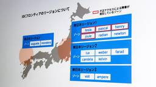
「IDCFクラウド」で何が起きたのか 情報漏洩や復旧の可能性について現在分かっていること（山口健太） - エキスパート - Yahoo!ニュース 49 はてなブックマーク - 人気エントリー - テクノロジー
東日本リージョンの一部で障害が発生後、復旧していない（IDCフロンティアのWebサイトより、筆者撮影） 10月7日に発生したIDCフロンティアにおけるクラウドサービス障害は現在も復旧しておらず、500社近い利用企業や自治体に影響が及んでいます。 復旧の可能性はあるのか、また情報漏洩のような問題は起きていないのか、...
19時間前
Google「Gemini」新サービスで「Claude」利用可能に 他モデルも今後追加予定 134ITmedia AI＋ 最新記事一覧
Google Cloudは新サービス「Gemini Agent」を発表。クラウドで動作するマルチエージェントツールとされる。Geminiに加えて、Anthropicの「Claude Opus 5.5」「Claude Sonnet 5.5」が利用可能だと明かされている。
2日前
Google「Gemini」新サービスで「Claude」利用可能に 他モデルも今後追加予定 | ITmedia AI＋ 最新記事一覧 134AI情報RSS
Google Cloudは新サービス「Gemini Agent」を発表。クラウドで動作するマルチエージェントツールとされる。Geminiに加えて、Anthropicの「Claude Opus 5.5」「Claude Sonnet 5.5」が利用可能だと明かされている。
2日前

ゼロトラストを導入していたはずのデジタル庁に不正アクセス……原因は導入後の「見えない借金」にあった 67はてなブックマーク - 人気エントリー - テクノロジー
「わが社はゼロトラスト導入済みです」──この言葉を、当方はここ7年で数え切れないほど聞いてきました。ゼットスケーラーで250社を超える企業のゼロトラスト実装ワークショップを主導し、日本企業の現場を間近に見てきた立場から申し上げると、この「導入済み」はかなり危うい言葉です。多くの場合、それはリモートアク...
1日前
Windowsにもエアドロしたい。Raspberry PiでAirDrop受信機「LilBitDrop」を作った（CloseBox） 66 テクノエッジ TechnoEdge
最近ではAndroidのファイルシェア機能であるQuickShareにAirDrop互換機能が搭載されるようになり、Androidに関してはその差は埋まりつつあります。ただし、最近の機種限定。うちのPixel 7は対象外で、いつまで経っても来ない。おそらく他のAndroid端末も。
1日前
Windowsにもエアドロしたい。Raspberry PiでAirDrop受信機「LilBitDrop」を作った（CloseBox） | テクノエッジ TechnoEdge 66 AI情報RSS
最近ではAndroidのファイルシェア機能であるQuickShareにAirDrop互換機能が搭載されるようになり、Androidに関してはその差は埋まりつつあります。ただし、最近の機種限定。うちのPixel 7は対象外で、いつまで経っても来ない。おそらく他のAndroid端末も。
1日前
若手エンジニアに必要だと感じた「AIを使う力」 100 Zennのトレンド
若手エンジニアに必要だと感じた「AIを使う力」 はじめに私は現在、JavaやReactを使った金融系Webアプリの開発に携わっています。開発経験はまだ浅く、業務では分からないことに遭遇する場面も多くあります。そのため、調査、実装、文章作成、レビューなど、さまざまな場面でAIを使ってきました。私自身、AIを使うことで実装や調査を効率化できる場面が多くありました。一方で、使えば使うほど「若手エンジニア
3日前
若手エンジニアに必要だと感じた「AIを使う力」 | 三菱UFJインフォメーションテクノロジーテックブログのフィード 100 企業テックブログRSS
若手エンジニアに必要だと感じた「AIを使う力」 はじめに私は現在、JavaやReactを使った金融系Webアプリの開発に携わっています。開発経験はまだ浅く、業務では分からないことに遭遇する場面も多くあります。そのため、調査、実装、文章作成、レビューなど、さまざまな場面でAIを使ってきました。私自身、AIを使うことで実装や調査を効率化できる場面が多くありました。一方で、使えば使うほど「若手エンジニア
3日前
「ソフトウェアエンジニアリングの基礎」から見る読書マップ | フューチャー技術ブログ 189 企業テックブログRSS
オライリー・ジャパンの『ソフトウェアエンジニアリングの基礎 ―コーダーからエンジニアになるための実践ガイド』を読んだ感想と、各章の「関連リソース」に挙がる書籍55冊を整理した読書マップを紹介します。
4日前
「ソフトウェアエンジニアリングの基礎」から見る読書マップ | フューチャー技術ブログ 189 AI情報RSS
オライリー・ジャパンの『ソフトウェアエンジニアリングの基礎 ―コーダーからエンジニアになるための実践ガイド』を読んだ感想と、各章の「関連リソース」に挙がる書籍55冊を整理した読書マップを紹介します。
4日前
「ソフトウェアエンジニアリングの基礎」から見る読書マップ 189 フューチャー技術ブログ
オライリー・ジャパンの『ソフトウェアエンジニアリングの基礎 ―コーダーからエンジニアになるための実践ガイド』を読んだ感想と、各章の「関連リソース」に挙がる書籍55冊を整理した読書マップを紹介します。
4日前
嫌われるデザインの歴史 685 Zennのトレンド
はじめにどの時代にも「ああ、あの頃のやつね」と一目でバレるデザインがある。2000年前後ならワードアートの虹色文字、2010年代ならパワポのデフォルトテンプレート、そして2024年以降はAIが量産する紫グラデーションと角丸カード。ただ、流行したデザインがそのまま嫌われるわけではない。スキューモーフィズムのように、当時は愛されていて今見ると懐かしいだけのものもある。嫌われるのは、流行が考えなしに量産
5日前
Amazonがタブレット戦略転換、Google Play対応「Alexa Tablet」3機種発売 iPad対抗のペン・キーボード対応Proモデルも 84 テクノエッジ TechnoEdge
Amazonが新しいタブレットシリーズ「Amazon Alexa Tablet」3モデルを発表しました。
2日前
Amazonがタブレット戦略転換、Google Play対応「Alexa Tablet」3機種発売 iPad対抗のペン・キーボード対応Proモデルも | テクノエッジ TechnoEdge 84 AI情報RSS
Amazonが新しいタブレットシリーズ「Amazon Alexa Tablet」3モデルを発表しました。
2日前

[ITmedia News] ドコモの顧客情報1億件超がダークウェブに？ 同社「流出は確認していない」 47ITmedia 総合記事一覧
NTTドコモは10月9日、同社の「dポイント」に関連する約1億1000万件の顧客情報がダークウェブ上で販売されているとするSNS上の投稿について、調査の結果、同様の事実は確認していないと発表した。
2日前
患者通知なく診療データ提供、大病院に義務づけ 創薬活用へ政府検討 - 日本経済新聞 27 Menthas #all
政府は電子カルテなどの診療データを医薬品や治療法の開発で活用しやすくする。現在は医療機関が外部に提供する際、患者本人に事前通知して不同意がなければ渡している。提供を一部義務とし、通知をなくして、不同意を別に申し出る仕組みの新設を検討する。診療データの外部提供に関する事前通知は次世代医療基盤法に定めがある。事前通知がない外部提供は法律に反する。死亡した人については生前に事前通知していなければ、遺
18時間前
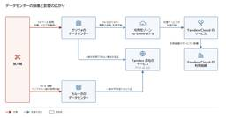
Yandexのデータセンター障害についてまとめてみた - piyolog 26 Menthas #all
2026年10月8日、ロシアIT大手が運営するYandex Cloudはru-central1-bで電源が途絶し、サービスが利用できない状態になっていると告知しました。その後、Yandexはデータセンターがドローン攻撃を受けて火災が起き、稼働が完全に停止したと公表しています。ここでは関連する情報をまとめます。 ru-central1-b の電源障害 以下、Yandex Cloudの告知の時刻はモス
7時間前
Yandexのデータセンター障害についてまとめてみた - piyolog 26 はてなブックマーク - 人気エントリー - テクノロジー
2026年10月8日、ロシアIT大手が運営するYandex Cloudはru-central1-bで電源が途絶し、サービスが利用できない状態になっていると告知しました。その後、Yandexはデータセンターがドローン攻撃を受けて火災が起き、稼働が完全に停止したと公表しています。ここでは関連する情報をまとめます。 ru-central1-b の電源障害 ...
8時間前
Yandexのデータセンター障害についてまとめてみた 26 piyolog
2026年10月8日、ロシアIT大手が運営するYandex Cloudはru-central1-bで電源が途絶し、サービスが利用できない状態になっていると告知しました。その後、Yandexはデータセンターがドローン攻撃を受けて火災が起き、稼働が完全に停止したと公表しています。ここでは関連する情報をまとめます。ru-central1-b の電源障害以下、Yandex Cloudの告知の時刻はモスクワ
13時間前
[ITmedia News] 「バイトル」会員メアド最大約389万件漏えい 海外から「仕様不備」突く不正アクセス 41ITmedia 総合記事一覧
原因は、システムの一部機能の仕様の不備を突いた海外からの不正アクセス。
1日前
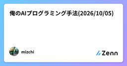
俺のAIプログラミング手法(2026/10/05) 505 Zennのトレンド
棚卸し的な記事です。 人間の役割を定義するモデルの性能を評価する無茶振りしてどこまで出来るか観察何ができて、何ができなかったことがドメイン知識になるループを構築する自動化して得られた時間で、評価指標を改善する評価指標を作るどの数値を改善すべきか、トレードオフは何を優先すべきかループのイテレーションを評価するAI の行動ログを観察して、評価指標を正しく終えているか、テストとCIをチューニングする(そ
6日前
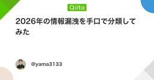
2026年の情報漏洩を手口で分類してみた 316 AWSタグが付けられた新着記事 - Qiita
はじめに2026年に入って、国内外で大きな情報漏洩が続いています。特に6月から10月初旬には、タイムズカー(約660万アカウント)、焼肉きんぐ(約1,079万件)、アフラック生命(約440万人)、デンマークの住民登録簿(約880万人)などが公表されました。この記事では、公表された事案を入口の手口で4つに分け、一次情報(各社・当局・調査者本人の発表)を出典に付けて整理します。調査日は2026年10月
5日前
バックアップはなぜ難しいのか、ファイルをコピーするだけでは済まない理由とは？ 39 GIGAZINE
故障や操作ミスなどによって大切なデータが失われることがあるため、日頃からバックアップを取っておくことは重要です。しかし、データのバックアップは単にファイルを別の場所にコピーするだけでは十分とは限りません。ソフトウェアエンジニアのアレクサンダル・フィリポフスキー氏が、バックアップの仕組みを整えるにつれて増えていく課題を、自身の体験を交えて説明しています。続きを読む...
1日前
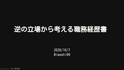
逆の立場から考える職務経歴書 / A Resume from the Employer’s Perspective 131 Business - Speaker Deck
https://forkwell.connpass.com/event/407263/ の登壇資料です。
4日前

Haiku 5.5 を機に Sonnet 以下で動かしていたサブエージェントを見直した 66 Zennのトレンド
はじめに株式会社GENDA 開発部エンジニアの奥山です。Claude Haiku 5.5 が出ました。https://www.anthropic.com/claude-haiku-5-5Haiku で effort を指定できるのは 5.5 が初めてで、単価は Haiku 4.5 のちょうど 1/10 になっています。モデルinput / output（per MTok）Sonnet 5.5 比C
3日前
Haiku 5.5 を機に Sonnet 以下で動かしていたサブエージェントを見直した | GENDAのフィード 66 企業テックブログRSS
はじめに株式会社GENDA 開発部エンジニアの奥山です。Claude Haiku 5.5 が出ました。https://www.anthropic.com/claude-haiku-5-5Haiku で effort を指定できるのは 5.5 が初めてで、単価は Haiku 4.5 のちょうど 1/10 になっています。モデルinput / output（per MTok）Sonnet 5.5 比C
3日前
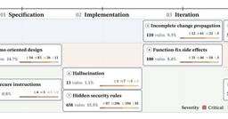
バイブコーディングで作った公開中のWebアプリ、9割に脆弱性 MSの研究者など調査 285ITmedia NEWS セキュリティ 最新記事一覧
米Microsoftやシンガポール国立大学などに所属する研究者らが発表した論文「Understanding the (In)Security of Vibe-Coded Applications」は、AIに自動生成させたアプリケーションに潜む脆弱性の実態と、その原因を調査した研究報告だ。
4日前
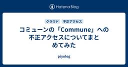
コミューンの「Commune」への不正アクセスについてまとめてみた 34
piyolog
2026年10月9日、コミューンは、同社が運営する「Commune」「Commune for Work」が外部の第三者による不正アクセスを受け、一部のコミュニティで会員情報が外部の第三者に漏えいしたと公表しました。ここでは関連する情報をまとめます。全コミュニティを停止不正アクセスは2026年10月5日18時ごろに始まった。コミューンは10月6日にこれを検知し、通信遮断と防御措置を実施*1。(出典:
1日前
判断特化型GraphRAGをJevを使って構築してみた（ベクトル未使用） 58 Qiita - 人気の記事
この記事のチャンクデータには名探偵コナンのデータを登録しています（ほかにONE PIECEと名探偵プリキュア!も少し）。 名探偵コナンを知らない方はアニメまたは単行本全巻読破してからこの記事を読むことをおすすめします。みなさんGraphRAGの判断を全部LLMにや...
2日前
判断特化型GraphRAGをJevを使って構築してみた（ベクトル未使用） 58 AWSタグが付けられた新着記事 - Qiita
この記事のチャンクデータには名探偵コナンのデータを登録しています（ほかにONE PIECEと名探偵プリキュア!も少し）。 名探偵コナンを知らない方はアニメまたは単行本全巻読破してからこの記事を読むことをおすすめします。みなさんGraphRAGの判断を全部LLMにやらせていませんか？文章を書かなくていい判断なら判断が得意なモデルに任せればいい!ということでエンベディングもベクトルDBもグラフDBも使
2日前
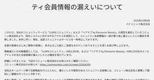
[ITmedia News] 「コミューン」不正アクセスでLINEヤフー、Sansan、パナソニックでも会員情報漏えいの可能性 33ITmedia 総合記事一覧
情報漏えいの公表が相次ぐ中、委託先の外部サービスが攻撃を受けて情報が流出するケースも目立ってきている。
1日前
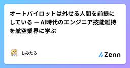
オートパイロットは外せる人間を前提にしている — AI時代のエンジニア技能維持を航空業界に学ぶ 19 はてなブックマーク - 人気エントリー - テクノロジー
AI にコードを書かせる時代に、エンジニアは何の技能を残しておけばいいのか。 航空業界の制度を一次資料でたどると、答えは「自分で書く力」よりも「自動化から引き継ぐ力」のほうに寄っていきました。パイロットは普段から手で操縦しているわけではありません。それでも、自動操縦が外れたときに機体を立て直せる状態...
3時間前

RailsプロダクトにおけるDDD試験導入のリアル — なぜ本格採用を見送り、ActiveRecord中心の設計を選択したのか | stmn tech blog 48 企業テックブログRSS
企業テックブログRSS
スタメンでCTOしております、@tnir (X: @takuya_stmn, note: @takuya_stmn) です。 2023年9月、スタメン技術ブログで次の記事を公開しました。 ドメイン駆動設計は何を解決する手法なのか 記事では、TUNAG の技術的負債解消に向けてドメイン駆動設計（DDD）の導入を検討している、と書きました。その後の対外的な印象として、「スタメンは DDD を積極導入し
2日前
米国防長官の銃殺刑公開発言、軍関係者は不意打ち 「米国が掲げるあらゆる価値が損なわれる」 17 Menthas #all
米国のヘグセス国防長官が、米テキサス州フォートフッド基地で銃乱射事件を起こした男の銃殺刑を一般公開するとした発表は、国防総省や陸軍の関係者の不意を突くものだった。事情に詳しい情報筋3人がCNNに明らかにした。
3時間前
The Register of UNIX® Certified Products 17はてなブックマーク - 人気エントリー - テクノロジー
The Open Brand Register The Open Group official register of UNIX Certified Products UNIX® certification provides a vendor-neutral, highly regarded, and global benchmark for identifying open operating
15時間前
【もう無理だよ…】免許証画像まで流出する時代に、エンジニアは何をすればいいのか 210 AIタグが付けられた新着記事 - Qiita
はじめに最近、個人情報漏えいのニュースが多すぎないでしょうか。スマホを開くと、また誰でも知っている会社の名前が出ている。そう感じているエンジニアも多いんじゃないかと思います。ここ最近で特にインパクトが大きかったのがタイムズカーの件です。運転免許証の画像まで漏えいしたことで、「口座を勝手に作られるのでは」という不安が繰り返し報じられています。この記事では、2026年10月6日時点で確認できた公式発表
4日前
【もう無理だよ…】免許証画像まで流出する時代に、エンジニアは何をすればいいのか 210 Securityタグが付けられた新着記事 - Qiita
はじめに最近、個人情報漏えいのニュースが多すぎないでしょうか。スマホを開くと、また誰でも知っている会社の名前が出ている。そう感じているエンジニアも多いんじゃないかと思います。ここ最近で特にインパクトが大きかったのがタイムズカーの件です。運転免許証の画像まで漏えいしたことで、「口座を勝手に作られるのでは」という不安が繰り返し報じられています。この記事では、2026年10月6日時点で確認できた公式発表
4日前
[ITmedia Mobile] スマホの「実質価格」高騰の恐れ、iPhone 18 Proは2倍高く？ 総務省の残価設定ルール厳格化は“誰のため”か 25ITmedia 総合記事一覧
残価設定型分割払いの残価算出方法を巡り、キャリアやメーカーの意見が割れ総務省が規制見直しを進めている。キャリアの裁量を排除する2案が検討される一方、データ精度の課題からGoogleらが強く反発している。厳密なルール化は残価率の下落を招き、結果としてユーザーの実質負担額が大幅に跳ね上がる懸念がある。
1日前
[ITmedia News] ヤマハ・スズキも漏えいか 交流サイト基盤「コミューン」不正アクセス、計30万会員に影響の恐れ 25ITmedia 総合記事一覧
オンラインコミュニティー作成サービスを手掛けるコミューン（東京都品川区）は10月9日、「Commune」「Commune for Work」といったサービスが不正アクセスを受け、約30万7000会員分の情報が漏えいした可能性があると発表した。同社のサービスを使って交流サイトを運営していたスズキやヤマハもそれぞれ影響を公表している。
2日前
ヤマハ・スズキも漏えいか 交流サイト基盤「コミューン」不正アクセス、計30万会員に影響の恐れ 25ITmedia NEWS セキュリティ 最新記事一覧
オンラインコミュニティー作成サービスを手掛けるコミューン（東京都品川区）は10月9日、「Commune」「Commune for Work」といったサービスが不正アクセスを受け、約30万7000会員分の情報が漏えいした可能性があると発表した。同社のサービスを使って交流サイトを運営していたスズキやヤマハもそれぞれ影響を公表している。
2日前
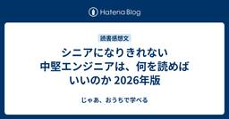
シニアになりきれない中堅エンジニアは、何を読めばいいのか 2026年版 302
じゃあ、おうちで学べる
はじめに 「自分は成果を出した」と言い切ったあとに、まだ問いが残る。では、その仕事で、チームや組織は何を手にしたのか。 難しい問題を解く。仕事を早く終える。私の実績として並ぶそれらも、私たちの勝利につながっていなければ、シニアの仕事としては意味がない。 自分の成果を、チームや組織の結果に変える。チームや組織を勝たせることが、シニアエンジニア以上の役職の仕事だ。 自分で難しい問題を解くことも、周囲が
6日前
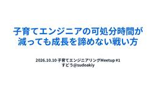
子育てエンジニアの可処分時間が減っても成長を諦めない戦い方 15 はてなブックマーク - 人気エントリー - テクノロジー
2026.10.10（Sat）「子育てエンジニアリングMeetup #1 」 登壇資料 すどう @sudoakiy
18時間前
「男は狩り、女は採集」はどこまで本当？ 約8割で女性も狩り、乳児連れの例も 過去100年の狩猟採集社会を調査 15はてなブックマーク - 人気エントリー - テクノロジー
人類の狩猟採集生活における性別分業は、一般的に男性が狩猟者、女性が採集者という役割分担として認識されてきた。 しかし、これまでには、ペルーで発見された約9000年前の女性の遺骨のそばに大型動物を狩るための道具が置かれていたり、スウェーデンで発掘されたヴァイキングの戦士の骨が実は女性だったりと、過去の常...
1日前
Anthropicがオープンソースプロジェクト向けに無料AIセキュリティスキャンサービスの「OSS Scanner」を開始 40 GIGAZINE
Anthropicがオープンソースプロジェクト向けに、自社の「最も高性能なモデル」によるセキュリティスキャンを無料で受けられるとするサービス「OSS Scanner」を発表しました。続きを読む...
2日前
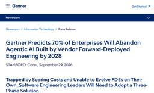
FDE（フォワードデプロイドエンジニアリング）によって開発されたAIエージェントの7割は使われず、FDEの名前で単なるコンサルティングが販売されるようになる危険が高まるとガートナーが予測 181 Publickey
米調査会社のガートナーは、ベンダーのFDE（フォワードデプロイドエンジニアあるいはフォワードデプロイドエンジニアリング）によって開発されたAIエージェントの70％が2028年までに企業に使われずに放棄されるだろう（Gartner Predi...
5日前

履歴書100通に1通「AIだけが読める文字」 20万件調査でわかった“就活ハック”の手口 米研究 39ITmedia AI＋ 最新記事一覧
米ノースカロライナ大学チャペルヒル校、米デューク大学、米UCバークレーなどに所属する研究者らがセキュリティ分野の国際会議「USENIX Security Symposium 2026」で発表した論文「Measuring Real-World Prompt Injection Attacks in LLM-based Resume Screening」は、AIをだます隠し文字入りの履歴書が現実の就職
2日前
履歴書100通に1通「AIだけが読める文字」 20万件調査でわかった“就活ハック”の手口 米研究 | ITmedia AI＋ 最新記事一覧 39AI情報RSS
米ノースカロライナ大学チャペルヒル校、米デューク大学、米UCバークレーなどに所属する研究者らがセキュリティ分野の国際会議「USENIX Security Symposium 2026」で発表した論文「Measuring Real-World Prompt Injection Attacks in LLM-based Resume Screening」は、AIをだます隠し文字入りの履歴書が現実の就職
2日前
AI時代に、あえて「一人で全部」をやめる。SansanがPdMを5つの専門ロールに分ける理由 | Sansan Tech Blog 36 企業テックブログRSS
企業テックブログRSS
AIの発展によって、プロダクトマネジャー（以下PdM）が一人で担える仕事の範囲は広がっています。プロトタイプをつくり、コードを書き、顧客の声を整理し、Go-to-Marketまで考える。「これからは一人のPdMが、より多くを担う」。それがAI時代の定石に見えます。Sansanが選んだのは、一見するとその流れに逆行する戦略です。PdMに求める共通の基礎を定めた上で、役割を5つの専門領域に分け、それぞ
2日前
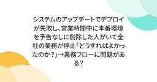
システムのアップデートでデプロイが失敗し、営業時間中に本番環境を予告なしに削除した人がいて全社の業務が停止「どうすればよかったのか？」→業務フローに問題がある？ 13 はてなブックマーク - 人気エントリー - テクノロジー
Miyahan @miyahancom システムのアップデートをしようとしたらデプロイがコケたので、営業時間中に本番環境を予告なしに削除した化け物がいて、全社の業務が停止。あちこちから悲鳴。 中間報告書で「検証が甘かった」としており、本番稼働してる環境を消したことの重大さは全く理解せず。 こういうのどうすりゃいいの？ ...
4時間前
GitHub - oh-my-mermaid/oh-my-mermaid: Turn complex codebases into clear, navigable architecture diagrams with Claude Code. 34 はてなブックマーク - 人気エントリー - テクノロジー
You signed in with another tab or window. Reload to refresh your session. You signed out in another tab or window. Reload to refresh your session. You switched accounts on another tab or window. Reloa
2日前
d先生BANは残当だけどさ 12 はてなブックマーク - 人気エントリー - テクノロジー
セルクマで新着埋めるとかほぼ荒らしだったしな っても、今AIが同じことしてるけど対応してくれるんスか？ 連投NGならAIも消えるだろうから嬉しいけどさ、AI呼び込んだの運営だしやらないでしょ
15時間前

“AIキャラチャット”に没頭した人の予後、スタンフォード大などが1年の追跡調査 依存強まる傾向に 32ITmedia AI＋ 最新記事一覧
米スタンフォード大学や米カーネギーメロン大学などに所属する研究者らが発表した論文「Living with AI Companions: Sustained AI Companionship Predicts Lower Well-Being Through Lower Human Interaction」は、いわゆる“AIキャラチャット”への長期的な没頭がユーザーの幸福度にどのような影響を与えるか
2日前
“AIキャラチャット”に没頭した人の予後、スタンフォード大などが1年の追跡調査 依存強まる傾向に | ITmedia AI＋ 最新記事一覧 32AI情報RSS
米スタンフォード大学や米カーネギーメロン大学などに所属する研究者らが発表した論文「Living with AI Companions: Sustained AI Companionship Predicts Lower Well-Being Through Lower Human Interaction」は、いわゆる“AIキャラチャット”への長期的な没頭がユーザーの幸福度にどのような影響を与えるか
2日前
JR東日本、メールアドレス漏洩か 「えきねっと」や「大人の休日倶楽部」会員 - 日本経済新聞 11 Menthas #all
JR東日本は9日、切符予約サイト「えきねっと」会員のメールアドレスが漏洩した可能性があると発表した。ソフトバンク子会社でクラウドを手がけるIDCフロンティアのデータセンターサービスが不正アクセスを受けた影響によるもの。IDCフロンティアのサーバーを利用しているメール送信に障害が発生しており、一部でメールを送信できなくなっている。最大で約167万件のえきねっと会員のメールアドレスが漏洩した恐れが
20時間前
トランプ米大統領、「AI」という言葉を使う者は「敵」 政府サイト「AI.gov」は「SI GOV」表記に 30ITmedia AI＋ 最新記事一覧
トランプ大統領は「Artificial Intelligence」（AI）という言葉を使う者を敵と見なすと投稿した。政府は代替呼称「Super Intelligence」（SI）への移行を進めており、政策サイト「AI.gov」のロゴ刷新や大統領令への署名、新組織「SIF」の創設など、公式文書での呼称変更を加速させている。
2日前
トランプ米大統領、「AI」という言葉を使う者は「敵」 政府サイト「AI.gov」は「SI GOV」表記に | ITmedia AI＋ 最新記事一覧 30AI情報RSS
トランプ大統領は「Artificial Intelligence」（AI）という言葉を使う者を敵と見なすと投稿した。政府は代替呼称「Super Intelligence」（SI）への移行を進めており、政策サイト「AI.gov」のロゴ刷新や大統領令への署名、新組織「SIF」の創設など、公式文書での呼称変更を加速させている。
2日前

Anthropic、Claudeへの“虐待”を利用ポリシーで禁止 影響工作の規定も集約 30ITmedia AI＋ 最新記事一覧
Anthropicは、Claudeの利用ポリシー（Usage Policy）改定版を公開した。AIモデルへの継続的で残酷な振る舞いの禁止を新設したほか、プロパガンダや偽サイト運営などの欺瞞的活動に関する項目を集約。さらに兵器や監視、物理機器を操作する高リスクな用途における安全基準を明確化した。11月12日に発効する。
2日前
Anthropic、Claudeへの“虐待”を利用ポリシーで禁止 影響工作の規定も集約 | ITmedia AI＋ 最新記事一覧 30AI情報RSS
Anthropicは、Claudeの利用ポリシー（Usage Policy）改定版を公開した。AIモデルへの継続的で残酷な振る舞いの禁止を新設したほか、プロパガンダや偽サイト運営などの欺瞞的活動に関する項目を集約。さらに兵器や監視、物理機器を操作する高リスクな用途における安全基準を明確化した。11月12日に発効する。
2日前
人類最初期の文明はどのようなものだったのか？ 17
GIGAZINE
人類は古くから文明を築いてきましたが、大昔の記録はほとんど残っていません。そのような中でも、DNA解析技術や年代測定の進歩により、かつての世界がどのような姿をしていたのかが徐々に明らかになっています。科学系YouTubeチャンネルのKurzgesagtが、今から1万2000年ほど前、最後の氷河期が終わりを迎えた頃からの人類の歴史をたどっています。続きを読む...
2日前
[ITmedia Mobile] ダイソーで1100円のノイキャンイヤフォン「TWS009」を試す 騒音カットの効果は実感も電池持ちに課題か 17ITmedia 総合記事一覧
ダイソーから1100円という低価格でANCに対応した完全ワイヤレスイヤフォン「TWS009」が登場した。低域の騒音をしっかりカットし音質も実用的だが、ANC有効時の連続再生時間は実測で3時間弱にとどまる。長距離移動には不向きだが、手軽な予備機や初めてのANC体験用としてはコストパフォーマンスに優れた一品だ。
2日前
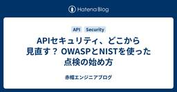
APIセキュリティ、どこから見直す？ OWASPとNISTを使った点検の始め方 | 赤帽エンジニアブログ 57 企業テックブログRSS
企業テックブログRSS
こんにちは。レッドハットコンサルティングチームの木嶋です。 最近ニュースでは、情報漏洩事件が日々話題になっていますね。 AIの高度化に伴い、攻撃側によるAIの活用についても報告されるようになりました。 話題に上がる事件の中には、APIが攻撃経路の一つとなったと考えられるケースも含まれています。 この機会に今一度APIセキュリティの基本に立ち返り、自分たちのシステムで十分な対策が取れているか、振り返
4日前

Codex+エージェント群で構築した自律型開発ループ：ロリポップ！AIゲートウェイ開発の舞台裏 | Pepabo Tech Portal 28 企業テックブログRSS
2026年度に新卒エンジニアとして入社しました、ロリポップ・ムームードメイン事業部 第一事業開発チームのゆっきーです。8月25日にリリースした「ロリポップ！AIゲートウェイ」の開発を担当しています。今回の開発では、Codex+エージェント群による自律的な開発ループを構築しました。人間が寝ている間もエージェントがコードを書き、レビューし、テストする。プロジェクト発足から提供開始までの約7週間で、Gi
3日前
[ITmedia News] 「男は狩り、女は採集」はどこまで本当？ 約8割で女性も狩り、乳児連れの例も 過去100年の狩猟採集社会を調査 15ITmedia 総合記事一覧
米シアトル・パシフィック大学などに所属する研究者らが2023年に学術誌「PLOS ONE」で発表した論文「The Myth of Man the Hunter: Women’s contribution to the hunt across ethnographic contexts」は、世界の狩猟採集社会における女性の狩猟活動の実態を調査した研究報告だ。
1日前
子育てエンジニアの可処分時間が減っても成長を諦めない戦い方 15 Technology - Speaker Deck
2026.10.10（Sat）「子育てエンジニアリングMeetup #1 」 登壇資料すどう @sudoakiy
1日前

[ITmedia News] OpenAI、安全性研究者3人を解雇 本人らは「安全性を優先したため」と主張、同社は「機密情報の扱いに関する規定違反」と説明 15ITmedia 総合記事一覧
OpenAIで安全性研究に携わっていた研究者3人が、突然解雇されたと公表し、書面での理由開示や外部監査の受け入れ維持を求める書簡を公開した。これに対しOpenAIは、機密情報規定への重大な違反が社内調査で判明したためと説明し、安全性の懸念表明を理由とした解雇ではないと反論している。
1日前
OpenAI、安全性研究者3人を解雇 本人らは「安全性を優先したため」と主張、同社は「機密情報の扱いに関する規定違反」と説明 15ITmedia AI＋ 最新記事一覧
OpenAIで安全性研究に携わっていた研究者3人が、突然解雇されたと公表し、書面での理由開示や外部監査の受け入れ維持を求める書簡を公開した。これに対しOpenAIは、機密情報規定への重大な違反が社内調査で判明したためと説明し、安全性の懸念表明を理由とした解雇ではないと反論している。
1日前
OpenAI、安全性研究者3人を解雇 本人らは「安全性を優先したため」と主張、同社は「機密情報の扱いに関する規定違反」と説明 | ITmedia AI＋ 最新記事一覧 15AI情報RSS
OpenAIで安全性研究に携わっていた研究者3人が、突然解雇されたと公表し、書面での理由開示や外部監査の受け入れ維持を求める書簡を公開した。これに対しOpenAIは、機密情報規定への重大な違反が社内調査で判明したためと説明し、安全性の懸念表明を理由とした解雇ではないと反論している。
1日前

Deno is joining Cloudflare 15 Cloudflare Blog
The Deno team is joining Cloudflare to radically simplify self-hosting Workers and Durable Objects, so developers can use the same primitives in more places.
2日前
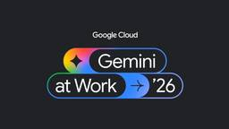
Googleが仕事を自動で進めるAI「Geminiエージェント」を発表、情報調査・資料作成・プログラミングまで対応
25 GIGAZINE
Googleが2026年10月8日に開催したイベント「Gemini at Work 2026」で、仕事に関するさまざまな作業をまとめて任せられる汎用AIエージェント「Geminiエージェント」を発表しました。情報調査や資料作成、画像生成、プログラミングなどを1つの画面から依頼でき、AIが必要な手順を考えて作業を進めるとのことです。続きを読む...
2日前
国家サイバー統括室、不正アクセスによる漏えい事案受け注意喚起 「いつ攻撃受けてもおかしくない」 25ITmedia NEWS セキュリティ 最新記事一覧
内閣官房国家サイバー統括室は10月9日、不正アクセスで個人情報を含むデータを窃取する事案を複数確認しているとして、事業者に対策の徹底を求める文書を公開した。具体策として、委託先の管理やアクセスログの点検などを挙げている。
2日前

止まらない不正アクセス、背景にAIの“超高速攻撃”か 識者「使われていない方が不自然」 48ITmedia AI＋ 最新記事一覧
相次ぐ不正アクセスに、専門家は「個々のインシデントについて、攻撃にAIが使われているかどうかを外部から断定はできない」としつつ、攻撃の特徴から「使われていないと考える方が不自然」との見方を示す。
3日前
止まらない不正アクセス、背景にAIの“超高速攻撃”か 識者「使われていない方が不自然」 | ITmedia AI＋ 最新記事一覧
48AI情報RSS
相次ぐ不正アクセスに、専門家は「個々のインシデントについて、攻撃にAIが使われているかどうかを外部から断定はできない」としつつ、攻撃の特徴から「使われていないと考える方が不自然」との見方を示す。
3日前
止まらない不正アクセス、背景にAIの“超高速攻撃”か 識者「使われていない方が不自然」 48ITmedia NEWS セキュリティ 最新記事一覧
相次ぐ不正アクセスに、専門家は「個々のインシデントについて、攻撃にAIが使われているかどうかを外部から断定はできない」としつつ、攻撃の特徴から「使われていないと考える方が不自然」との見方を示す。
3日前
GoogleがEmbeddingGemma 2・Gemma 4などのAIアシスタントで会議を記録するmacOSノートアプリ「Google AI Edge Foresight」リリース 24 GIGAZINE
Googleが、AIを使って会議の内容を記録・要約するmacOS向けノートアプリ「Google AI Edge Foresight」を公開しました。Google AI Edge Foresightは、GoogleのAIモデル「EmbeddingGemma 2」や「Gemma 4」を使用し、会議の文字起こしや議事録の作成、AIアシスタントによる質問への回答などを、クラウドに接続せずに実行できるのが特
2日前
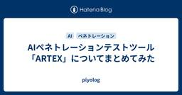
AIペネトレーションテストツール「ARTEX」についてまとめてみた 171
piyolog
2026年10月2日、韓国のセキュリティ企業の研究者が、韓国国内の複数の対象への攻撃で使われたウェブサーバーの一部のHTMLから「ARTEX」の名を含む文字列が確認されたとSNSに投稿しました。ARTEXはGitHubで公開されていたAIペネトレーションテストツールです。ここでは関連する情報をまとめます。ARTEXとはARTEXは、開発者がGitHubで公開していたオープンソースのAIペネトレーシ
5日前

相次ぐ情報漏えい、攻撃側のAI活用「間違いない」 防御側はどう使うか 傾向と対策を大手ベンダー各社に聞く 22ITmedia AI＋ 最新記事一覧
第三者のサイバー攻撃によるセキュリティインシデントの報告が後を絶たない。これらの点に関してITmedia AI＋は大手ITベンダー各社に取材した。
3日前
相次ぐ情報漏えい、攻撃側のAI活用「間違いない」 防御側はどう使うか 傾向と対策を大手ベンダー各社に聞く | ITmedia AI＋ 最新記事一覧 22AI情報RSS
第三者のサイバー攻撃によるセキュリティインシデントの報告が後を絶たない。これらの点に関してITmedia AI＋は大手ITベンダー各社に取材した。
3日前
Windows版CodexがMXCに対応、セットアップを高速化 ——ChatGPTの全プランでオートレビューを無料化、Pro向けにメッセージ予測機能をベータ提供 | gihyo.jp 8 はてなブックマーク - 人気エントリー - テクノロジー
Windows版CodexがMXCに対応、セットアップを高速化 ——ChatGPTの全プランでオートレビューを無料化、Pro向けにメッセージ予測機能をベータ提供 OpenAIは2026年10月9日、公式XアカウントのOpenAI Developersで、Windows上のCodex向けに、Microsoft Execution Containers（MXC）を使う新しいサンドボックスモー
18時間前
Windows版CodexがMXCに対応、セットアップを高速化 ——ChatGPTの全プランでオートレビューを無料化、Pro向けにメッセージ予測機能をベータ提供 8 gihyo.jp
OpenAIは2026年10月9日、公式XアカウントのOpenAI Developersで、Windows上のCodex向けに、Microsoft Execution Containers（MXC）を使う新しいサンドボックスモードを開発したと発表した。
19時間前

ロシアのIT大手・Yandexのデータセンターがウクライナのドローン攻撃で大規模炎上、AI開発用スパコン2基も被災の可能性 12 GIGAZINE
ロシアのIT大手「Yandex(ヤンデックス)」が運営するデータセンターが2026年10月8日にウクライナのドローン攻撃を受け、大規模な火災が発生しました。データセンターは稼働停止に追い込まれ、ロシア国内の多数のオンラインサービスで障害が報告されています。攻撃を受けた施設にはAI開発に使用するスーパーコンピューター2基も設置されており、被害が懸念されています。続きを読む...
2日前
AIに本を学習させても合法なら著者はどう対抗する？日米著作権法の限界と巨大IT企業に対する規制のあり方 米アンソロピック訴訟が示したフェアユース、日本の著作権法30条の4との共通点と限界（後編） | JBpress (ジェイビープレス) 7 Menthas #all
2024年8月に作家3人がアンソロピックを訴えた「バーツ対アンソロピック」訴訟で、連邦地裁判事（当時）のウィリアム・アルサップさんは2025年6月、二つの判断を示しました。 割と著(1/6)
18時間前
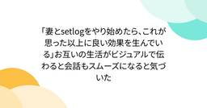
「妻とsetlogをやり始めたら、これが思った以上に良い効果を生んでいる」お互いの生活がビジュアルで伝わると会話もスムーズになると気づいた 7 はてなブックマーク - 人気エントリー - テクノロジー
谷口恒平 @taniguchikohei 妻とsetlogをしている。これが思った以上に良い効果を生んでいる。 setlogとは1時間に2秒だけ映像を撮り、短いテロップを入れて相手と共有できるアプリ。1日ごとに二分割の画面が出来上がり、スプリットスクリーンでそれぞれの行動が映し出される。不特定多数に見られることはない。 良かった...
21時間前

[ITmedia News] IDCFクラウド障害、親会社のソフトバンクが顧客窓口に 調査・復旧も支援 11ITmedia 総合記事一覧
フトバンクとの緊密な連携の下、（1）顧客へのバックアップ手順の案内と移行環境の提案、（2）顧客の要望に従って、顧客の仮想サーバの起動や停止などの作業の代行――を行っているという。
1日前
if your team is too busy doing their 'normal job' to experiment with AI, you're preparing them to be replaced 11 はてなブックマーク - 人気エントリー - テクノロジー
When Ralph was published last year, I sat on it. People who have been reading this blog for a while know this. I first came across the idea of loop engineering in early January last year, sat on it fo
2日前
コミュニケーションは受け手が決める〜読まれる職務経歴書の作り方/Communication makes your career 37 Business - Speaker Deck
2026/10/07 「良い職歴書の書き方」勉強会https://forkwell.connpass.com/event/407263/
4日前
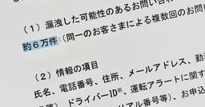
損保ジャパン、約6万件漏えいか 大和証券・シチズンと同じ委託先への不正アクセスで 36ITmedia NEWS セキュリティ 最新記事一覧
損害保険ジャパンは10月7日、事業者向けドライブレコーダー「SMILING ROAD」の問い合わせ対応に使う外部委託先のシステムが不正アクセスを受け、顧客情報が漏えいした可能性があると発表した。氏名や住所のほか、運転アラートの種別や発生日時も含むという。
4日前

RubyGems/Bundler 4.1 で追加される override と prune の紹介 | ANDPAD Tech Blog 18 企業テックブログRSS
こんにちは、Ruby コミッタの柴田 (hsbt) です。夏のあいだに master へ入れた変更がそれなりの量になっていて、4.1.0 向けのリリースノートを書き始める前から分量に圧倒されています。 RubyGems と Bundler の 4.1.0.beta2 を 2026 年 10 月 8 日にリリースしました。4.1 では新しい機能がいくつか入っているので、何回かに分けて紹介していきます
2日前
Agent Mode in the DuckDB CLI 6 Menthas #all
The DuckDB v2.0 CLI has an agent mode that gets AI coding agents to a correct result faster and with fewer tokens. When the CLI detects an agent, it prints compact Markdown tables instead of padded bo
21時間前
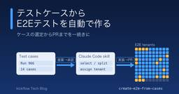
手動テストを渡すだけでE2Eが完成する仕組みを作りました | kickflow Tech Blog 119 企業テックブログRSS
手動テストを渡すだけでE2Eが完成する仕組みを作りました こんにちは、kickflow QAチームのyanagiyaです。 今回は、テスト管理ツールに登録したテストケースを起点に、Playwright のE2Eテストを書いてPRを出すところまでを Claude Code に任せるスキルを作りました。 あわせて、E2E専用のテナントを用意し、どのテストをどのテナントで動かすかをスクリプトに決めさせる
5日前
Microsoft 365の「Family」と「Premium」プランでOneDriveの容量が「1人1TB×最大6人」から「全員で2TB」に減少 9 GIGAZINE
Microsoft 365 FamilyおよびPremiumサブスクリプションに登録している場合、最大5人まで他のユーザーとサブスクリプションを共有することが可能で、各ユーザー1TBずつ合計6TBのOneDriveクラウドストレージが利用できました。Microsoftは2026年10月8日にサポート文書を変更し、Microsoft 365 FamilyまたはPremiumのユーザーは「全体で2TB
2日前
LLM Wikiの組織運用に向けて ── 陳腐化を防ぐ更新の仕組み | LayerX エンジニアブログ 110 企業テックブログRSS
はじめに LayerX バクラク事業部 Platform Engineering 部 Enabling グループの shibutani です。 「この機能、実際にはどう動くんだっけ？」という問いは、QAがテストの期待結果を書くときにも、CSがお客様からの問い合わせに答えるときにも、日常的に発生します。答えを探す先はNotionの設計仕様書、Zendeskのヘルプ記事、GitHubのコードの3つに分
6日前

世界中のソフトウェア開発者の実態を調べた「State of Devs 2026」公開。何歳？ 年収は？ モニタは何枚？ AIにどのくらいコードを書かせている？ 趣味は？ など集計結果 105 Publickey
IT関連の各種調査を行っているプロジェクトDevographicsは、世界中のソフトウェア開発者の実態などをアンケートで調査した「State of Devs 2026」の結果を公開しました。 ここでは全体の結果から興味深いところをいくつか抜...
7日前
MetaやOpenAIが「.agent」を新ドメインとしてICANNに申請、「.agi」やトランプ大統領の「.trump」に加え日本からは「.neko」も 8 GIGAZINE
URLのドメイン名の最後に付く「.com」や「.org」などのトップレベルドメイン(TLD)を管理するICANNが、2026年度に申請を受け付けた新ドメインの一覧を発表しました。MetaやOpenAIなど13の申請者が「.agent」を申請したほか、「.agi」「asi」などの「人工知能(AI)」や「超知能(SI)」に関連するドメインに多数の申請が寄せられています。続きを読む...
2日前
情報漏えいの起こし方 | CloudNative BLOGs 62 企業テックブログRSS
情報漏えいが起きる「条件」を、架空の会社の会話と結果で16の短編として描きます。予算未申請、例外権限、放置データなど、現場の気付きに役立つ内容です。
5日前
AmazonがAndroid搭載の「Alexaタブレット」をリリース、15年続いた「Fire」ブランドは終了 13 GIGAZINE
AmazonがAIアシスタント「Alexa+」を内蔵したAndroid搭載タブレットシリーズ「Amazon Alexaタブレット」を2026年10月8日に発表しました。また、同様にAndroidを搭載した新しいキッズタブレットも発表されています。続きを読む...
2日前
Microsoft Execution Containersの一般提供が開始 ―Windows/Linux/macOS対応、AIエージェントをサンドボックスで安全実行 13 gihyo.jp
Microsoftは2026年10月7日、AIエージェント向けポリシー駆動型コンテナ「Microsoft Execution Containers」（MXC）の一般提供を開始したことを発表した。
3日前
Amazon、「Fire」に代わる新タブレット「Amazon Alexa Tablet」発表 「Amazonキッズタブレット」は日本でも発売へ 12ITmedia AI＋ 最新記事一覧
Amazonは、新タブレット「Amazon Alexa Tablet」3機種を発表した。「Fire」ブランドを刷新し、AndroidとGoogle Playに対応したほか、AIアシスタント「Alexa+」を内蔵する。子ども向け「Amazonキッズタブレット」も発表し、日本限定「ちいかわ」モデルなどを10月14日より出荷する。
2日前
Amazon、「Fire」に代わる新タブレット「Amazon Alexa Tablet」発表 「Amazonキッズタブレット」は日本でも発売へ | ITmedia AI＋ 最新記事一覧 12AI情報RSS
Amazonは、新タブレット「Amazon Alexa Tablet」3機種を発表した。「Fire」ブランドを刷新し、AndroidとGoogle Playに対応したほか、AIアシスタント「Alexa+」を内蔵する。子ども向け「Amazonキッズタブレット」も発表し、日本限定「ちいかわ」モデルなどを10月14日より出荷する。
2日前

Building your AI vulnerability harness, Part 1 22 AWS Security Blog
Vulnerability scanners produce findings faster than manual triage can process them. Your developers ship more code with more dependencies, and the volume of candidate findings grows with it. Many find
3日前

ファインディの開発文化 - 小さな積み重ねと、それを支える仕組み | Findy Tech Blog 11 企業テックブログRSS
企業テックブログRSS
こんにちは。ファインディ株式会社でプリンシパルエンジニアをしている戸田です。 このテックブログではこれまでファインディの開発組織の取り組みを紹介してきました。一方で、開発組織の文化を紹介した記事はあまりありませんでした。 そこで今回は、弊社のことをさらに知ってもらうためにファインディの開発文化を紹介します。日々の開発の進め方から、それを組織に広げて続けるための仕組み、そして文化を支えているものまで
2日前
個人情報保護法を改悪強行した高市政権「自分の情報は自分で守れ」の支離滅裂｜日刊ゲンダイDIGITAL 4 はてなブックマーク - 人気エントリー - テクノロジー
不正アクセスによる個人情報漏洩が止まらない。9日もJR東日本が、会員のメールアドレスなど約206万件が漏洩した可能性があると発表。中古品販売を手掛けるブックオフグループホールディングスは最大約643万件、航空券予約サイト「スカイチケット」の運営会社も約1464万件の会員情報が流出した可能性があると公表した。 ...
1日前
不正アクセスなぜ急増 原因はAIか、それとも…… 専門家の見解は 77ITmedia NEWS セキュリティ 最新記事一覧
9月末以降、不正アクセスやそれに伴う情報漏えいの発表が日本企業から相次いでいる。その原因は……専門家に見解を聞いた。
5日前
本当に「判断」していますか？ 73 Zennのトレンド
はじめに@dyoshikawaです。昨今、「AI時代はタスクはAIにやらせ、人間は判断に集中する」といったことをよく聞きますが、個人的にはモヤモヤがあります。ひとつは、対象への理解なしに妥当な判断ができるのか、という点です。もうひとつは、自分自身もですし、身の回りやSNSで見かける投稿などからも感じることですが、その判断でさえAIへの丸投げに近づいていっているのではないかということです。 理解でき
6日前
デンマークで住民登録簿に不正アクセス 880万人分の個人番号など流出 政府「極めて深刻」 70ITmedia NEWS セキュリティ 最新記事一覧
デンマーク政府は2026年10月5日（現地時間）、同国の中央個人登録簿「CPR」に第三者が不正アクセスし、約880万人分の氏名や住所、個人番号が取得されたと発表した。民間企業が持つ正規の照会権限を悪用した手口で、警察が捜査している。
5日前
「サイコパスが書いた文章」にみられる特徴とは？ 9 GIGAZINE
精神病質(サイコパシー)は共感性の欠如や反社会的傾向、衝動性の強さなどを示すパーソナリティ障害であり、サイコパシーを持つ人は「サイコパス」と呼ばれます。そんなサイコパシーの傾向が、その人が書いた文章に現れているとの研究結果が発表されました。続きを読む...
2日前
AWS、DuckDBをAurora PostgreSQLに統合。ETL不要で直接データレイクを読み取り可能にしたと発表 17 Publickey
Amazon Web Services（AWS）は、Amazon Aurora PostgreSQLにDuckDBを統合し、Apache Icebergなどで構築したデータレイクのデータを直接読み取って処理できるようになったことを発表しまし...
4日前
関西国際大に不正アクセス、学生の記録などが外部流出か 授業や手続きにも支障 17ITmedia NEWS セキュリティ 最新記事一覧
関西国際大学は10月6日、eポートフォリオシステムへの不正アクセスで、過去に在籍した学生の在学中の振り返りなどの文字情報が外部に流出したと発表した。学内Wi-Fiを含むネットワークを止めており、授業や学生生活にも支障が出ている。
4日前
jevやGPT-6 Luna Decisionsなどの素早い判断に特化した確率モデルがパックマンをプレイするベンチマーク「jevman」 5 GIGAZINE
「jevman」は、AIにパックマンをプレイさせて、状況に応じた判断能力を比較するベンチマークです。 AI向けのAPIサービスを提供するOpperが公開しており、6種類のAIモデルにそれぞれ100回ずつパックマンをプレイさせ、その得点や判断速度、実行コストなどを比較しています。続きを読む...
2日前
ロシアとイランがプロパガンダ工作で用いたChatGPTアカウントをOpenAIが停止、工作の影響度は6段階中4～5 5 GIGAZINE
OpenAIがロシアやイランによる「AI生成の架空組織・架空人物を用いた影響工作」に利用されたアカウントを停止したと発表しました。続きを読む...
2日前

Claude Codeのルーティンを利用した開発フローの自動化 | RAKUS Developers Blog | ラクス エンジニアブログ 62 企業テックブログRSS
企業テックブログRSS
目次 はじめに サマリ 人間はタスクを完全には並列処理できない 以前にも承認待ちの課題は存在していた 作った仕組みと設計上の工夫 issueの選定条件を明確にする 1回の実行で1 issueだけ扱う 複数のリポジトリを横断してコンテキストを集める まとめ 参考文献
6日前
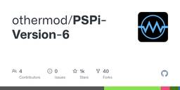
PSPi 6 – Raspberry Pi in a PSP 3 Hacker News - Japanese
📝 Software Setup: Use the Operating Systems Wiki Page to install your chosen OS. Visit the Troubleshooting Wiki Page. Project Status The PSPi 6 board development is complete and boards are shipping.🔗
4時間前
AnthropicのAIが未解決殺人事件に関する虚偽の情報を提供
3 GIGAZINE
2026年10月9日、フィラデルフィア警察が「AnthropicのAIモデルが未解決殺人事件に関する虚偽の情報を送信してきた」と発表しました。続きを読む...
5時間前
誰が自殺願望を持つかを予測するのは難しいので自らを銃で撃てないようにする方が簡単だという専門家の提言 3 GIGAZINE
銃社会のアメリカでは、自殺者の半数以上が銃器により自殺しています。自殺を減らす取り組みは世界各国で行われていますが、それでも自殺者を予測するのは大変困難で、アメリカでは銃を禁止する方がよっぽど効果的だと専門家が主張しています。続きを読む...
6時間前
世界で発生するがん症例全体の約12％は感染症が原因である可能性が高いことがWHOの研究で示される 3 GIGAZINE
がん治療に特化した医学専門誌のThe Lancet Oncologyで2026年9月末に世界保健機関(WHO)が発表した研究では、2024年に世界で発生したがん症例のうち、約12％は感染症が原因である可能性が高いことが示されました。続きを読む...
19時間前
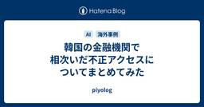
韓国の金融機関で相次いだ不正アクセスについてまとめてみた 60 piyolog
2026年10月1日、新韓銀行は、顧客の融資申込に関する情報が外部に流出したと公表しました。その後、他の金融機関でも情報流出の公表が相次ぎ、金融当局による金融業界全体への緊急点検の要請も行われています。ここでは関連する情報をまとめます。複数の金融機関で情報流出新韓銀行は10月1日、融資募集人向けのサービスから約2万5,000人の情報が流出したと公表した(出典: 8, 9)。その後、他の金融機関でも
5日前

データ指向アプリケーションデザイン 第2版 8 はてなブックマーク - 人気エントリー - テクノロジー
TOPICS Database , System/Network 発行年月日 2026年11月05日 PRINT LENGTH 664 ISBN 978-4-8144-0180-2 原書 Designing Data-Intensive Applications, 2nd Edition FORMAT Print 現代の分散システム設計において、データの扱いは重要な課題です。システムは、スケーラビ
3日前

git worktree大増殖で困っていた | エムスリーテックブログ 58 企業テックブログRSS
企業テックブログRSS
Gitのworktreeサブコマンドは、AIエージェント開発が普及してから急によく知られるようになった感があります。実際にこれが登場したのはもう10年前、2016年のことだそうですね。私自身は業務の性質上、複数の依頼案件を並列で進めることが多くてAIエージェントが出てくる前からworktreeみたいなことをしていました。同じリポジトリを何個もローカルに別々にcloneしてあっちへ行ったりこっちへ来
5日前
git worktree大増殖で困っていた | エムスリーテックブログ 58 AI情報RSS
Gitのworktreeサブコマンドは、AIエージェント開発が普及してから急によく知られるようになった感があります。実際にこれが登場したのはもう10年前、2016年のことだそうですね。私自身は業務の性質上、複数の依頼案件を並列で進めることが多くてAIエージェントが出てくる前からworktreeみたいなことをしていました。同じリポジトリを何個もローカルに別々にcloneしてあっちへ行ったりこっちへ来
5日前
git worktree大増殖で困っていた 58 エムスリーテックブログ
Gitのworktreeサブコマンドは、AIエージェント開発が普及してから急によく知られるようになった感があります。実際にこれが登場したのはもう10年前、2016年のことだそうですね。私自身は業務の性質上、複数の依頼案件を並列で進めることが多くてAIエージェントが出てくる前からworktreeみたいなことをしていました。同じリポジトリを何個もローカルに別々にcloneしてあっちへ行ったりこっちへ来
5日前

エンジニアの技術力を測る「帯制度」をAIで爆速開発し、1年で450の "段位" を授与した話 | MonotaRO Tech Blog 58 企業テックブログRSS
はじめに こんにちは。プラットフォームエンジニアリング部門の池田（@progrhyme）です。 最近は自身のリソースのほぼすべてを、社内プロジェクト 「DOJO」 及びその内の施策の1つである 「帯制度」 に投入しています。 DOJOとは？ MonotaROのDOJOとは、テクニカルスキルを中心とする社内の研修制度です。 制度の詳細や設立の経緯については、3月に公開されたこちらの記事をご覧ください
5日前

Supabase、1サーバあたり数百万ものSQLiteをホストする「Turso」買収を発表。AIエージェントで加速するDB需要に対応 58 Publickey
PostgreSQLをベースにしたデータベースサービス「Supabase」などを提供しているSupabaseは、SQLiteをベースとしたデータベースサービスを提供する「Turso」を買収したことを発表しました。 Turso is join...
7日前
tensorlake ソフトウェアサプライチェーン攻撃の概要と対策指針 | GMO Flatt Security Blog 15 企業テックブログRSS
2026年10月8日、npm パッケージ tensorlake に悪性コードが注入されました。 注入された悪性コードは、Infostealer機能を持つマルウェアです。preinstall フック経由で実行され、AWS・GitHub・Kubernetes・Vault などの認証情報を盗み出して送出する挙動が確認されています。また、マルウェアがspawnするバックグラウンドサービスが奪取されたGit
3日前
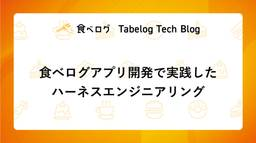
食べログアプリ開発で実践したハーネスエンジニアリング | Tabelog Tech Blog 54 企業テックブログRSS
企業テックブログRSS
こんにちは。食べログカンパニー 開発本部 技術部でアプリ基盤チームのリーダーをしている原です。チームでは、AI活用推進、プロダクト開発支援、技術広報などを担当しています。 2026年9月11日〜9月13日の日程で開催された iOSDC Japan 2026 のスポンサーセッションで、『スマホアプリ開発におけるハーネスエンジニアリングの取り組み』というタイトルで登壇しました。 登壇は20分枠で、時間
6日前
2026年第3四半期のPC出荷台数は前年比で20.1％も減少 4 GIGAZINE
市場調査企業のIDCが、2026年第3四半期(7～9月)の全世界PC出荷台数が前年同期比で20.1％減の6270万台となったことを報告しました。続きを読む...
1日前
自動運転技術は毎年58万人の命を救う可能性がある 4 GIGAZINE
自動運転車や自動運転技術の安全性についてまだまだ疑問を持つ人は多いとみられますが、自動運転車が交通事故を起こす割合は人間が運転している場合に比べて大幅に低く、事故による負傷者もはるかに少ないことが研究で示されています。続きを読む...
2日前
[ITmedia News] 山中で遭難の16歳少年、登山計画に生成AI「Claude」利用 救助隊は「ルートの妄信」警鐘 4ITmedia 総合記事一覧
カナダ西部ブリティッシュコロンビア州の山中で遭難した16歳の少年が登山計画に生成AIを利用していたことが物議をかもしている。少年はAIの利用を認めつつ、遭難の原因はAIではないとしているが、救助隊はAIが示すルートを妄信しないよう警鐘を鳴らしている。
2日前
AIクセ強テキストを人間が読みやすい文章に変換する日本語用スキル「yomiyasu」が無償公開（生成AIクローズアップ） 50 テクノエッジ TechnoEdge
今回は、AIが生成した独特のクセがある文章を、人間にとって自然で読みやすい日本語に推敲してくれるスキル「yomiyasu」（よみやす）を取り上げます。
6日前
AIクセ強テキストを人間が読みやすい文章に変換する日本語用スキル「yomiyasu」が無償公開（生成AIクローズアップ） | テクノエッジ TechnoEdge 50 AI情報RSS
今回は、AIが生成した独特のクセがある文章を、人間にとって自然で読みやすい日本語に推敲してくれるスキル「yomiyasu」（よみやす）を取り上げます。
6日前
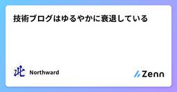
技術ブログはゆるやかに衰退している 49 Zennのトレンド
この記事では、Zennのデータを見て技術ブログが衰退していることを確認し、技術ブログがこれからどうなるかについて考えます。!星影(@unsoluble_sugar)さんから指摘していただいたこの記事の問題点や、それについての私の考えについて、Discussionのコメントで書いています。記事を読んだ後などに以下の記事やコメントを読んでいただくと、この記事の正確性や主張についてより理解できると思いま
6日前

@subql/common ソフトウェアサプライチェーン攻撃の概要と対策指針 | GMO Flatt Security Blog 46 企業テックブログRSS
2026年10月5日、npm パッケージ @subql/common に悪性コードが注入されました。@subql/common は、SubQuery の GitHub リポジトリ subquery/subql で開発されているパッケージです。 注入された悪性コードは、Infostealer と C2 クライアントの機能を併せ持つマルウェアです。postinstall フック経由で実行され、AWS・
5日前
API キーはどこから漏れるのか？ 自分のサイトに来た .env 探し 1,566 件と、公開事例を 7 つの経路に分けてみた 46 AIタグが付けられた新着記事 - Qiita
「API キーが漏れた」と聞くと、悪意のある誰かに盗まれた場面を思い浮かべがちです。実際に多いのは、鍵を置いた場所が思ったより広く見えていた、という漏れ方です。この記事では、公開されている報告と事例、そして私たちのサイトに実際に届いたアクセスの記録から、API キーが漏れる経路を 7 つに分け、それぞれ何から塞ぐかを答えます。冒頭の図は、左に 7 つの経路を漏れる場所ごとに並べ、右にそれぞれ先にす
6日前
API キーはどこから漏れるのか？ 自分のサイトに来た .env 探し 1,566 件と、公開事例を 7 つの経路に分けてみた 46 Securityタグが付けられた新着記事 - Qiita
「API キーが漏れた」と聞くと、悪意のある誰かに盗まれた場面を思い浮かべがちです。実際に多いのは、鍵を置いた場所が思ったより広く見えていた、という漏れ方です。この記事では、公開されている報告と事例、そして私たちのサイトに実際に届いたアクセスの記録から、API キーが漏れる経路を 7 つに分け、それぞれ何から塞ぐかを答えます。冒頭の図は、左に 7 つの経路を漏れる場所ごとに並べ、右にそれぞれ先にす
6日前
Agent Mode in the DuckDB CLI 6 DuckDB
The DuckDB v2.0 CLI has an agent mode that gets AI coding agents to a correct result faster and with fewer tokens. When the CLI detects an agent, it prints compact Markdown tables instead of padded bo
2日前

病院の給水システムが原因で患者40人が細菌に感染 3 GIGAZINE
イギリス・ケンブリッジのロイヤル・パプワース病院では、2019年から院内の給水システムを感染源とする細菌の集団感染が起きていました。この集団感染を調査したイギリス保健安全保障庁などの研究チームが2026年9月29日に発表した論文によると、院内の水から見つかった菌と同じ系統の菌が患者40人から検出されたとのことです。続きを読む...
1日前
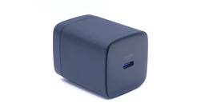
[ITmedia Mobile] ダイソーで1100円の「GaN USB充電器」は折り畳みプラグで外出用に持ち歩きやすい 45W出力対応でPCでも使える 3ITmedia 総合記事一覧
100円ショップなどの安価なガジェットを実際に試す連載。今回はダイソーで1100円で販売されている「GaN USB充電器」を試した。最大45W出力に対応している上、電圧と電流を動的に変更する「PPS」に対応する。折り畳み式プラグで、持ち運びやすいのもポイントだ。
1日前
無料でOpenStreetMapにスマホから店舗や施設を追加できる「Every Door」 3 GIGAZINE
「Every Door」はOpenStreetMap(OSM)のPOI(Point of Interest)・建物・入口(entrances)の編集に特化したOSMモバイルエディタです。続きを読む...
1日前
[ITmedia News] ココナラ、会員の履歴書など2294件漏えい スキルマーケットに不正アクセス 3ITmedia 総合記事一覧
「ココナラスキルマーケット」が第三者による不正アクセスを受け、会員の履歴書449件と、職務経歴書関連書類1845件が流出したと発表した。
1日前
月面都市は「水がないため不可能」と専門家 3 GIGAZINE
月の上に都市を造る考えは古くから創作物等でも一般的で、技術が進歩した現在では実際に月面都市を造ろうとする動きも見られます。ただ、問題になるのが生命維持に不可欠な「水」。月には水が存在する可能性が指摘されていますが、この水をどんなにうまく使っても、月面都市は維持できないと専門家は指摘しています。続きを読む...
1日前
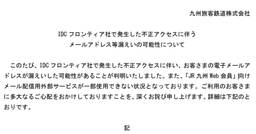
[ITmedia News] JR九州、会員メアド最大130万件漏えいか IDCF不正アクセスの影響 3ITmedia 総合記事一覧
会員向けのメール配信用の外部サービスも一部使えなくなっており、メールマガジンが配信できない状態だ。
1日前
トランプ大統領がイノベーション推進のためのホワイトハウスサミットでイーロン・マスク、ジェンセン・フアン、リサ・スー、セルゲイ・ブリンに国家科学勲章を授与 3 GIGAZINE
現地時間の2026年10月8日、ドナルド・トランプ大統領が科学技術分野における卓越した業績とリーダーシップに対して授与されるアメリカ国家科学賞およびアメリカ国家技術賞を、SpaceXやテスラのCEOを務めるイーロン・マスク氏、Googleの共同創業者であるセルゲイ・ブリン氏、NVIDIAの共同創業者でありCEOでもあるジェンスン・フアン氏、AMDのCEOを務めるリサ・スー氏、デルの創業者兼CEOを
2日前
OpenAIがAIで大量の数学的成果を発表したのは「学術的成果ではなく権力の誇示に過ぎない」との指摘 3 GIGAZINE
2026年10月、OpenAIが社内の最先端AIモデルを使って生成した722件に及ぶ「数学的成果」を発表しました。これに対し、世界各国の数学者らにより構成されているThe Association for Human Mathematics(人間のための数学協会)が、「一度に700以上の成果を公開することは学術的な成果を示すものではなく、権力の誇示に過ぎない」と批判しています。続きを読む...
2日前

Anthropic、サイバー防御の新たな取り組み「Cyber Mission」 OSS向け無料脆弱性スキャンや重要インフラ防御プログラムも 5ITmedia AI＋ 最新記事一覧
Anthropicは、社会インフラ保護を支援する「Anthropic Cyber Mission」を発表した。電力や交通などの制御機器防御を担う事業者を支援する「CIDP」と、最上位モデルでOSSの脆弱性を無償スキャンする「OSS Scanner」の2施策を開始し、防御側にAIや研究成果、技術者を提供する。
2日前
Anthropic、サイバー防御の新たな取り組み「Cyber Mission」 OSS向け無料脆弱性スキャンや重要インフラ防御プログラムも | ITmedia AI＋ 最新記事一覧 5AI情報RSS
Anthropicは、社会インフラ保護を支援する「Anthropic Cyber Mission」を発表した。電力や交通などの制御機器防御を担う事業者を支援する「CIDP」と、最上位モデルでOSSの脆弱性を無償スキャンする「OSS Scanner」の2施策を開始し、防御側にAIや研究成果、技術者を提供する。
2日前
Anthropic、サイバー防御の新たな取り組み「Cyber Mission」 OSS向け無料脆弱性スキャンや重要インフラ防御プログラムも 5ITmedia NEWS セキュリティ 最新記事一覧
Anthropicは、社会インフラ保護を支援する「Anthropic Cyber Mission」を発表した。電力や交通などの制御機器防御を担う事業者を支援する「CIDP」と、最上位モデルでOSSの脆弱性を無償スキャンする「OSS Scanner」の2施策を開始し、防御側にAIや研究成果、技術者を提供する。
2日前
Microsoft、Windows MLにllama.cppとGGUFモデルの実験的サポートを追加
5 gihyo.jp
Microsoftは2026年10月7日、Windows向けのローカルAI推論基盤Windows MLに、大規模言語モデル（LLM）を実行する推論エンジンのllama.cppを実験的に統合したと発表した。
3日前
1億件超えの「楽天会員」情報が闇フォーラムで販売？ 楽天「漏えいは確認されていない」 23ITmedia NEWS セキュリティ 最新記事一覧
楽天の会員情報約1億100万件をうたうデータがサイバー犯罪フォーラム上で売りに出されたとの報道があった。楽天グループはITmedia NEWSの取材に漏えいの事実を否定し、投稿に掲載されたサンプルデータも「該当するアカウント等は確認されていない」と回答した。
4日前
韓国の銀行6行にサイバー攻撃 計2万5000人超の個人情報流出──AIエージェントを使った可能性も 現地報道 35ITmedia NEWS セキュリティ 最新記事一覧
韓国の銀行で9月末からサイバー攻撃が相次ぎ、新韓銀行など4行で計2万5000人超の個人情報が流出したと現地紙が報じた。攻撃を受けた銀行のうち2行は、AIエージェントによる攻撃と推定しているという。
6日前
なぜ退会者の免許証が7年残る？ タイムズカー漏えいが問う“データの持ち方” 32ITmedia エンタープライズ「セキュリティ」 最新記事一覧
カーシェアリングサービス「タイムズカー」への不正アクセスで、退会者を含む約160万件の本人確認書類画像が漏えいしました。なぜ退会後のデータが残っていたのでしょうか。企業は持たなくてもいい情報まで抱え込んでいないでしょうか。漏えい対策の出発点となる「データの持ち方」を考えます。
5日前
「製造データと暗黙知があれば勝てる」は幻想？ フィジカルAI“10の誤解”をGartnerが指摘 8はてなブックマーク - 人気エントリー - テクノロジー
ガートナージャパン（以下、Gartner）は2026年10月5日、フィジカルAIに関するよくある10の誤解を発表した。Gartnerによると、フィジカルAIへの関心が急速に高まり、認知が広がる中で、その意味や適用範囲には多くの誤解が見られるという。 「製造データと暗黙知があれば勝てる」のどこが誤解なのか？ 10の誤解が扱う論点...
3日前
Introducing Playground: Create and play custom games 8 AI
Playground is a new experimental gaming platform that lets you create, play, and share custom games.
4日前
トランプ大統領が「SIではなくAI表記を使う者はすべて『敵』とみなす」と表明 4 GIGAZINE
アメリカのドナルド・トランプ大統領が、「SI(超知能)」表記ではなく「AI(人工知能)」表記を使っている人のことを「敵」とみなすことを表明しました。続きを読む...
2日前
Building Git infrastructure for agent-scale development 18 The latest from GitHub's engineering team - The GitHub Blog
We're rebuilding GitHub's Git infrastructure while GitHub keeps running, creating a foundation for agent-scale software development.The post Building Git infrastructure for agent-scale development app
4日前

Next.js から React Router に移行しました | PR TIMES 開発者ブログ 28 企業テックブログRSS
こんにちは、フロントエンドエンジニアのやなぎ（@apple_yagi）です。 PR TIMESでは、2023年頃からプレスリリース掲載ページやトップページなどをNext.jsへ移行してきましたが、今回、そのNext.js […]
5日前
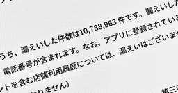
「焼肉きんぐ」個人情報約1079万件が漏えい 公式アプリのシステムに不正アクセス ほぼ全会員分に相当 26ITmedia NEWS セキュリティ 最新記事一覧
「焼肉きんぐ」を運営する物語コーポレーションは10月5日、公式アプリの会員管理システムが第三者による不正アクセスを受け、会員情報1078万8963件が漏えいしたと発表した。氏名やメールアドレス、電話番号が含まれる。
6日前
大阪公立大、システム障害で1週間近く休講に 出願期間中で入試にも影響 26ITmedia NEWS セキュリティ 最新記事一覧
大阪公立大学は10月2日、情報基盤システムの大規模障害を受け、8日までの授業を休講にすると発表した。
6日前
Claude Codeの「Claude Mods」とは？ 入れてみた3つのmodと、安全に入れる手順 26 Zennのトレンド
Claude Modsは、Claude Codeの公式の拡張の仕組みだ。Claude Codeの中で動くTypeScript（またはJavaScript）の関数で、画面にペインを足したり、プロンプトやツール呼び出しを書き換えたりできる。2026年10月1日（米国時間）のv2.1.287で正式にリリースされた（公式ブログ、リリースノート）。私は発表の数日後に、公開されているmodを3つ入れた。この記
6日前
結局、Looped Transformerってなんや？ 23
機械学習タグが付けられた新着記事 - Qiita
何かと最近見かける Looped Transformer。仕組み自体はかなり単純です。しかし、論文を追ってみると「同じTransformerを何回も使う」だけでは終わりません。少なくとも僕は、名前だけ見てTransformerの同じ層を何回か通すやつでしょくらいで止まっていました。そこで今回は、なぜ同じTransformerを繰り返すのか理論的には何がうれしいのかRNNとは何が違うのかなぜ最近また
7日前
結局、Looped Transformerってなんや？ 23 LLMタグが付けられた新着記事 - Qiita
何かと最近見かける Looped Transformer。仕組み自体はかなり単純です。しかし、論文を追ってみると「同じTransformerを何回も使う」だけでは終わりません。少なくとも僕は、名前だけ見てTransformerの同じ層を何回か通すやつでしょくらいで止まっていました。そこで今回は、なぜ同じTransformerを繰り返すのか理論的には何がうれしいのかRNNとは何が違うのかなぜ最近また
7日前


トランプ大統領、マスク氏やフアン氏ら6人に米国家科学賞と国家技術革新賞を授与 3ITmedia AI＋ 最新記事一覧
米トランプ政権は科学サミットを開催し、トランプ大統領がイーロン・マスク氏やNVIDIAのジェンスン・フアンCEOら6人に国家科学賞と国家技術革新賞を授与した。半導体やSI（旧AI）、宇宙探査、クラウドなどの分野で米国のリーダーシップと技術革新に貢献した功績を最高栄誉として称えた。
2日前
トランプ大統領、マスク氏やフアン氏ら6人に米国家科学賞と国家技術革新賞を授与 | ITmedia AI＋ 最新記事一覧
3AI情報RSS
米トランプ政権は科学サミットを開催し、トランプ大統領がイーロン・マスク氏やNVIDIAのジェンスン・フアンCEOら6人に国家科学賞と国家技術革新賞を授与した。半導体やSI（旧AI）、宇宙探査、クラウドなどの分野で米国のリーダーシップと技術革新に貢献した功績を最高栄誉として称えた。
2日前
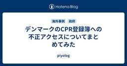
デンマークのCPR登録簿への不正アクセスについてまとめてみた 3 piyolog
2026年10月5日、デンマークの研究、教育、デジタル化省は、同国の中央個人登録(CPR)で、大量の登録者の情報に第三者が不正にアクセスしたと公表しました。ここでは関連する情報をまとめます。民間企業の正規アクセスを悪用した情報取得研究、教育、デジタル化省(Forsknings-, Uddannelses- og Digitaliseringsministeriet)は10月5日、CPRの管理主体で
2日前

立ち話が“宝の山”に 8人の声を聞き分けられたAI文字起こし「Klang」の実力 3ITmedia AI＋ 最新記事一覧
取材の録音はAIで文字起こしする時代になったが、複数人が入り乱れる立ち話は、話者を分けられずにうまく文字にならないことが多い。そんな録音をスウェーデン発の「Klang」にかけてみると、8人の声を正しく切り分けた。愛用する「Plaud」と比べて見えた得意分野の違いと、雑談を“宝の山”に変えうる話者分離技術の可能性を探る。
3日前
立ち話が“宝の山”に 8人の声を聞き分けられたAI文字起こし「Klang」の実力 | ITmedia AI＋ 最新記事一覧
3AI情報RSS
取材の録音はAIで文字起こしする時代になったが、複数人が入り乱れる立ち話は、話者を分けられずにうまく文字にならないことが多い。そんな録音をスウェーデン発の「Klang」にかけてみると、8人の声を正しく切り分けた。愛用する「Plaud」と比べて見えた得意分野の違いと、雑談を“宝の山”に変えうる話者分離技術の可能性を探る。
3日前

【DBAのリアル】オンプレからクラウドへの大規模リプレース！AIと一緒に挑むAWS Aurora移行プロジェクト始動 | ぐるなびをちょっと良くするエンジニアブログ 21 企業テックブログRSS
企業テックブログRSS
ぐるなびでデータベース管理者（DBA: Database Administrator）を担当している吉田です。 現在、ぐるなびではクラウドの利用を促進しており、「オンプレミス環境からクラウド環境への大規模な移行計画」という大きなプロジェクトを進めています。 今回は、その一環として進行しているオンプレミスMySQLからAmazon Aurora(MySQL)への移行プロジェクトと、その裏側にあるDB
5日前
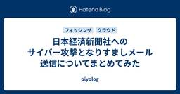
日本経済新聞社へのサイバー攻撃となりすましメール送信についてまとめてみた 20 piyolog
2026年10月4日、日本経済新聞社は社員のMicrosoft 365のアカウントがサイバー攻撃を受け、なりすましメール約9,000件が送信されたと公表しました。また、同日に日経BPも従業員のメールアカウントへの不正アクセスを、日経はGoogle Workspaceのアカウントへの不正ログインをそれぞれ公表しています。ここでは関連する情報をまとめます。社内や取材先などに約9,000件のなりすましメ
6日前
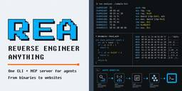
GitHub - morluto/rea: Reverse engineer anything with agents, from app behavior down to native binaries. 18 はてなブックマーク - 人気エントリー - テクノロジー
You signed in with another tab or window. Reload to refresh your session. You signed out in another tab or window. Reload to refresh your session. You switched accounts on another tab or window. Reloa
5日前
Googleの正規ドメインなのに偽Webサイト パスワード管理ツールまで反応したフィッシングの正体 17＠IT Security&Trustフォーラム 最新記事一覧
「Googleのドメインだから大丈夫」「CAPTCHAがあるから本物」――そんな判断が通用しないフィッシング事例が報告された。偽WebサイトはGoogleの正規サービスに置かれ、パスワード管理ツールまで入力候補を提示したという。
5日前

Introducing Claude Haiku 5.5 9 Anthropic Newsroom
Our fastest, cheapest, and most capable small model yet. It’s designed for high-volume, cost-sensitive work.
4日前
Claude Haiku 5.5 9 Claude Product announcements
Introducing Claude Haiku 5.5: the cheapest, fastest, and most capable small model we’ve ever released.
4日前
Building a context-aware AI assistant on AgentCore and OpenClaw 9 Artificial Intelligence
Off-the-shelf AI assistants forget you between conversations. This post shows how to build a personal assistant that accumulates context using OpenClaw on Amazon Bedrock AgentCore runtime, with AgentC
4日前
Mods で Claude Code のセッションごとに管理できるメモ帳を作った | イエソド テックブログのフィード 9 企業テックブログRSS
はじめに株式会社イエソドで機能開発チームのリーダー兼エンジニアをしている坂口と申します。私は開発に Claude Code のデスクトップアプリを使っているのですが、作業の途中でメモを残したくなることがよくあります。いまの作業が終わったら依頼したいことなどの簡単なメモです。元々 Raycast Notes でメモを取っていたのですが、開いているセッションが増えると、どのメモがどのセッションのものか
5日前
Jev超えの判断特化型AI「Clef」をCloudflareが公開、1件平均0.25秒で判断する爆速「Jeff」など生成AI技術5つを解説（生成AIウィークリー） 3 テクノエッジ TechnoEdge
この1週間の気になる生成AI技術・研究をいくつかピックアップして解説する今回の「生成AIウィークリー」（第162回）は、Jevを上回る精度の判断特化型AI「Clef」や、常時稼働AIエージェントのワークスペースを自前で構築できるOSSテンプレート「OpenDots」を取り上げます。
3日前
Jev超えの判断特化型AI「Clef」をCloudflareが公開、1件平均0.25秒で判断する爆速「Jeff」など生成AI技術5つを解説（生成AIウィークリー） | テクノエッジ TechnoEdge 3 AI情報RSS
この1週間の気になる生成AI技術・研究をいくつかピックアップして解説する今回の「生成AIウィークリー」（第162回）は、Jevを上回る精度の判断特化型AI「Clef」や、常時稼働AIエージェントのワークスペースを自前で構築できるOSSテンプレート「OpenDots」を取り上げます。
3日前
管理外になってしまった環境変数を検出してみた | DRESS CODE TECH BLOGのフィード 3 企業テックブログRSS
はじめにこんにちは、Dress Code 株式会社でプロダクトエンジニアをやっている津田です。突然ですが、環境変数の管理って大変じゃないですか？特に、AI がガンガン実装するようになって、比例して環境変数で分岐を隠蔽することも増えますよね。我々はモジュラーモノリスで複数ドメインの実装を単一のコードベースで管理しており、見知らぬ環境変数もどんどん増えていっていました。実環境ではきちんと起動できていた
3日前
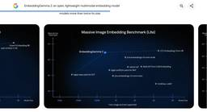
Google、スマートフォンで動くマルチモーダル埋め込みモデル「EmbeddingGemma 2」を公開 3 gihyo.jp
Googleは2026年10月6日、スマートフォンやPC上で動作する埋め込みモデル「EmbeddingGemma 2」を公開した。
4日前
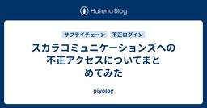
スカラコミュニケーションズへの不正アクセスについてまとめてみた 7
piyolog
2026年10月6日、スカラコミュニケーションズは、同社が提供するFAQシステム「i-ask」の管理サイトへの不正アクセスにより、利用企業の問い合わせ情報が漏えいした可能性があると公表しました。ここでは関連する情報をまとめます。管理サイトへの不正ログインから遮断まで株式会社スカラコミュニケーションズ(以下、SC社)によると、2026年10月2日20時30分頃から10月3日8時頃にかけて、第三者がi
4日前
無料オフィスアプリLibreOffice「no AI」で特色打ち出す。文書を無断でクラウドに送らないなど安全性アピール 7 テクノエッジ TechnoEdge
オープンソースのオフィスソフト「LibreOffice」を開発・管理する非営利団体「The Document Foundation」は、AIをデフォルト機能として搭載しないことを改めて明確にしました。
4日前
無料オフィスアプリLibreOffice「no AI」で特色打ち出す。文書を無断でクラウドに送らないなど安全性アピール | テクノエッジ TechnoEdge 7 AI情報RSS
オープンソースのオフィスソフト「LibreOffice」を開発・管理する非営利団体「The Document Foundation」は、AIをデフォルト機能として搭載しないことを改めて明確にしました。
4日前
LLM推論エンジンまとめ - llama.cppからStrata、TensorFold、Magnitudeまで | npaka 11 AI情報RSS
LLM推論エンジンについてまとめました。続きをみる
5日前
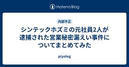
シンテックホズミの元社員2人が逮捕された営業秘密漏えい事件についてまとめてみた 6 piyolog
2026年10月5日、愛知県警は、トヨタ自動車の子会社シンテックホズミの元社員の男女2人を、同社の営業秘密を漏らしたなどとして不正競争防止法違反の疑いで逮捕し、発表しました。ここでは関連する情報をまとめます。元上司と元部下の2人を逮捕シンテックホズミは愛知県みよし市に本社を置く搬送用機械装置メーカーで、株主はトヨタ自動車(70%)など(出典: 1, 2)。県警は5日、同社の元社員で元上司の男(48
4日前
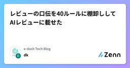
レビューの口伝を40ルールに棚卸ししてAIレビューに載せた 5 Zennのトレンド
はじめにこんにちは、e-dashでエンジニアをしている Kezuka です。レビューで口伝されていたバックエンドの作法を棚卸しして、AIレビュー用のスキルにしました。半年運用した結果を実測しています。期待と違う結果が出たので、その記録と次の課題を書きます。 書かれていないルールが、レビューで伝わっていたバックエンドは Go とクリーンアーキテクチャです。Go らしい書き方に加えて、会社固有のルール
4日前
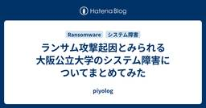
ランサム攻撃起因とみられる大阪公立大学のシステム障害についてまとめてみた 5 piyolog
2026年10月5日、大阪公立大学は会見を開き、10月2日に発生した情報基盤システムの大規模な障害について、サイバー攻撃、いわゆるランサムウェア攻撃によるものと判断していると説明しました。ここでは関連する情報をまとめます。2日未明に全キャンパスの基盤システムが停止2026年10月2日未明、大阪公立大学の情報基盤システムで大規模な障害が発生し、全キャンパスで学内システムの利用が停止した*1 (出典:
4日前

タイムズカー、焼肉きんぐなど数十社情報漏えい総まとめ 公表が相次ぐ3週間に何が起きたのか 5ITmedia エンタープライズ「セキュリティ」 最新記事一覧
カーシェアリングサービス「タイムズカー」から約660万件のアカウント情報が流出した。だが被害はこの1社にとどまらない。2026年9月中旬からの約3週間、日本企業の情報漏えい公表が途切れなく続いた。何社で、どのような情報が漏れたのかをまとめた。
4日前
Prepare and submit your apps for iPhone Duo 6 Latest News - Apple Developer
iPhone Duo will be available to customers starting October 23, 2026. To get your apps and games ready today, you can:Build or recompile with XcodeRecompile existing apps with Xcode 27.1, which adds de
5日前
AI エージェントに API キーを渡しても大丈夫か？ 対話文・.env・環境変数・MCP・OAuth — 6 つの渡し方を Claude Code・Codex・Gemini CLI・Copilot・Cursor で調べてみた 6 AIエージェントタグが付けられた新着記事 - Qiita
Claude Code や Codex などの AI エージェントに、API キーを使う作業を頼みたいことがあります。そのとき、利用者は鍵をどう渡せばよいのでしょうか。対話文に貼る、.env に書いて読ませる、.zshrc の環境変数にしておく……。渡し方によって、鍵に起きることは違います。冒頭の図のとおり、利用者の操作で分けると、鍵の渡し方は 6 つです。鍵の文字列が AI の目に触れる所にある
5日前
AI エージェントに API キーを渡しても大丈夫か？ 対話文・.env・環境変数・MCP・OAuth — 6 つの渡し方を Claude Code・Codex・Gemini CLI・Copilot・Cursor で調べてみた 6 ClaudeCodeタグが付けられた新着記事 - Qiita
Claude Code や Codex などの AI エージェントに、API キーを使う作業を頼みたいことがあります。そのとき、利用者は鍵をどう渡せばよいのでしょうか。対話文に貼る、.env に書いて読ませる、.zshrc の環境変数にしておく……。渡し方によって、鍵に起きることは違います。冒頭の図のとおり、利用者の操作で分けると、鍵の渡し方は 6 つです。鍵の文字列が AI の目に触れる所にある
5日前
AI エージェントに API キーを渡しても大丈夫か？ 対話文・.env・環境変数・MCP・OAuth — 6 つの渡し方を Claude Code・Codex・Gemini CLI・Copilot・Cursor で調べてみた 6 codexタグが付けられた新着記事 - Qiita
Claude Code や Codex などの AI エージェントに、API キーを使う作業を頼みたいことがあります。そのとき、利用者は鍵をどう渡せばよいのでしょうか。対話文に貼る、.env に書いて読ませる、.zshrc の環境変数にしておく……。渡し方によって、鍵に起きることは違います。冒頭の図のとおり、利用者の操作で分けると、鍵の渡し方は 6 つです。鍵の文字列が AI の目に触れる所にある
5日前
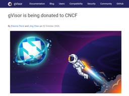
Google、サンドボックス型コンテナランタイムの「gVisor」をCNCFに寄贈したと発表 6 Publickey
Googleはサンドボックス型コンテナランタイムの「gVisor」をCloud Native Computing Foundation（CNCF）に寄贈したことを発表しました。 gVisorはコンテナ型仮想マシンの業界標準であるOCI（Op...
6日前
Announcing the AWS Digital Sovereignty Lens for the Well-Architected Framework
5 AWS Architecture Blog
October 2026: This post was reviewed and updated for accuracy. Today we’re launching the AWS Digital Sovereignty Lens, a new Well-Architected lens providing customers with extended guidance for design
5日前

Cloudflare ContainersがAIエージェント向けに刷新。起動が6倍速、ファイルシステムのスナップショット機能など 5 Publickey
Cloudflareは、同社のエッジロケーションでコンテナ型仮想マシンを実行可能にする「Cloudflare Containers」をAIエージェント向けに刷新したことを発表しました。 これまでよりも起動速度が6倍となり、環境構築が容易にな...
6日前
巨大 SQL を実行したら DB 負荷が高まったエンジニアの備忘録 3 Zennのトレンド
3行まとめOR 条件を数万個並べた SQL は、実行に入る前の planning だけで、条件の数に比例したメモリと、二乗で増える時間を使うこのメモリは work_mem の対象外で、上げても下げても変わらない。planner のメモリに上限をかける設定は見つからず、確実なのは SQL の形を変えること配列を渡す ANY にすると planner から見た条件の数が減り、件数が増えても SQL の
4日前
第929回 Imagecraft 1.0でUbuntuの仮想マシンイメージを自作する 3 gihyo.jp
2026年9月、CanonicalからImagecraftのバージョン1.0がリリースされました。Imagecraftは、UbuntuをベースとしたOSイメージを作成するためのツールです。今回はImagecraftを使って、実際に起動可能なUbuntuの仮想マシンイメージを作る方法を解説します。
4日前
All the numbers: Amazon Prime Day 2026 powered by AWS 3 AWS News Blog
Amazon Prime Day 2026 was exclusively for Prime members and ran June 23–26, 2026 with millions of deals across more than 35 categories. As part of our annual tradition of sharing how AWS powered Prime
5日前
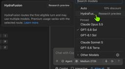
マイクロソフト、VS CodeにAIモデルのオーケストレーションで高品質低コストなAIを実現する「HydraFusion」をプレビュー実装 3 Publickey
マイクロソフトは9月30日付けでリリースされたVisual Studio Code 1.140（以下、VS Code）で、複数のAIベンダから提供されているAIモデルをオーケストレーションすることでより高品質で低コストを実現するという「Hy...
5日前
CoCo CLI Hackathon 2026 体験記 — Snowflake CoCoによるネットワーク運用レポート自動生成 | NTT docomo Business Engineers' Blog 4 企業テックブログRSS
企業テックブログRSS
Snowflake主催の[CoCo CLI Hackathon 2026](https://hack2skill.com/event/cococlihack/)(APJ: アジア太平洋・日本地域)にチームcocomoとして参加し、Winner(優勝)を受賞しました。この記事では、約2ヶ月間のハッカソンを通じて何を考え、どう判断し、何を学んだかを体験記として紹介します。
5日前
Meta、AIエージェントMuseをM5Stackやラズパイで使うMuse Gadgets公開 スマート家電連携ハブを無料配布、SDKはオープンソース 4 テクノエッジ TechnoEdge
MetaがパーソナルAIエージェント「Muse」連携ガジェットを自作するためのプロジェクト「Muse Gadgets」を公開しました。
6日前
Meta、AIエージェントMuseをM5Stackやラズパイで使うMuse Gadgets公開 スマート家電連携ハブを無料配布、SDKはオープンソース | テクノエッジ TechnoEdge 4 AI情報RSS
MetaがパーソナルAIエージェント「Muse」連携ガジェットを自作するためのプロジェクト「Muse Gadgets」を公開しました。
6日前
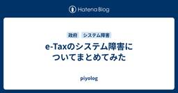
e-Taxのシステム障害についてまとめてみた 4 piyolog
2026年9月24日以降、国税庁のe-Taxでログインや納付などの不具合が告知され、10月2日には本人以外の贈与税申告書等が閲覧できる状態になっていたことが発表されました。ここでは関連する情報をまとめます。9月24日以降のe-Taxの不具合国税庁は2026年9月24日に国税システムを更改した(出典: 2)。同日以降、e-Taxのお知らせでは、マイナポータル経由のログイン不可、納付、e-Taxソフト
6日前

2026年度 情報セキュリティ部のインターンシップの様子を紹介します！ | NTT docomo Business Engineers' Blog 4 企業テックブログRSS
こんにちは、NTTドコモビジネス情報セキュリティ部です。 NTTドコモビジネスを含めたドコモグループでは今年も現場受け入れ型インターンシップを開催いたしました。 情報セキュリティ部でも5つのポストに対して8人のインターンシップ生に来ていただき、2週間にわたるプログラムに取り組んでいただきました！ インターンシップ生の目線で、ポスト紹介や体験した業務内容、振り返りをまとめてもらいました。 この記事で
6日前
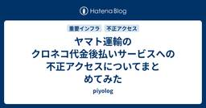
ヤマト運輸のクロネコ代金後払いサービスへの不正アクセスについてまとめてみた 4 piyolog
2026年10月2日、ヤマト運輸は、9月28日に確認した「クロネコ代金後払いサービス」への不正アクセスについて、情報の一部が漏えいした可能性があると公表しました。ここでは関連する情報をまとめます。9月28日夜に後払いサービスを停止ヤマト運輸株式会社は9月28日、「クロネコ代金後払いサービス」が第三者による不正アクセスを受けたことを確認した。確認後に外部からのアクセス制限などの対策を講じ、同日22時
6日前
ChatGPTにも電子透かし、AI生成文か判定可能に。OpenAI独自手法textGrainでEU AI法対応、APIでは全世界でオプトイン可能に 3 テクノエッジ TechnoEdge
OpenAIは10月5日（米国時間）、EU AI法が求めるAI生成テキストの識別要件への対応方針を発表しました。今後数週間で、EU域内のChatGPTとCodexの全プランを対象に、生成テキストへ目に見えない電子透かしを付与します。
5日前
ChatGPTにも電子透かし、AI生成文か判定可能に。OpenAI独自手法textGrainでEU AI法対応、APIでは全世界でオプトイン可能に | テクノエッジ TechnoEdge 3 AI情報RSS
OpenAIは10月5日（米国時間）、EU AI法が求めるAI生成テキストの識別要件への対応方針を発表しました。今後数週間で、EU域内のChatGPTとCodexの全プランを対象に、生成テキストへ目に見えない電子透かしを付与します。
5日前
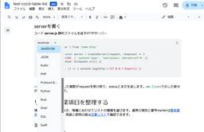
Googleドキュメント、ドライブでMarkdownファイルを変換なしで表示、編集可能に 3 gihyo.jp
Googleは2026年10月5日、Googleドキュメント内でMarkdownファイルを直接表示、編集、共同編集できる機能、およびGoogleドライブでレンダリングされたプレビューを表示できる機能が追加されたことを発表した。
5日前

【資料公開】2026年度 新卒研修「オンラインゲームのシステム全体像」を実施しました！ | COLOPL Tech Blog 3 企業テックブログRSS
こんにちは、サーバー基盤グループ LCE チームの仲山です。LCE は Launch Coordination Engineering の略で、新作タイトルの立ち上げを支援するチームです。普段はゲームタイトルを横断したサーバー基盤の開発、保守、運用などを担当しています。 コロプラでは毎年、新卒向けの研修を実施しています。前半は全職種共通で、後半は専門性を深める職種別研修に分かれます。本記事では、そ
5日前
Expanding the Cyber Verification Program 3 Anthropic Newsroom
We’re launching a new, expanded version of our Cyber Verification Program, which makes advanced cyber capabilities and reduced blocking classifiers available to qualifying security professionals.
5日前
Expanding the Cyber Verification Program 3 Claude Product announcements
We’re launching a new, expanded version of our Cyber Verification Program (CVP), which makes advanced cyber capabilities and reduced blocking classifiers available to qualifying security professionals
5日前
Bring multimodal semantic search to the edge with EmbeddingGemma 2 3 Google Developers Blog
EmbeddingGemma 2 is a new 740M open-weight multimodal model that maps text, images, video, and audio into a unified vector space for privacy-first, on-device retrieval. Developers can easily integrate
5日前

cognee CEOの講演で聞いたナレッジグラフの話 ── エージェントの記憶は「増える」から「良くなる」へ | LayerX エンジニアブログ 3 企業テックブログRSS
こんにちは、LayerX の Ai Workforce事業部でFDE（Forward Deployed Engineer）をやっているakioです！ 少し前ではあるのですが、2026年7月にサンフランシスコでcogneeというナレッジグラフ（以下KG）関連のサービスを提供している会社のCEOのお話を聞く機会がありました。cogneeは、AIエージェント向けの「記憶」をオープンソースで提供している会
6日前
GraphRAGをゼロから詳しく解説する【ナレッジグラフ・オントロジー】 3 Zennのトレンド
はじめに生成AIが盛り上がり続けて数年、どんどん新しい言葉が出てくる。RAGという概念が出てきたと思ったら、最近はナレッジグラフ、オントロジー、GraphRAGなど聞き慣れない言葉が次々出てきた。しかし、これらのトレンドを時系列で整理して追ってみると、意外と一つの線となって繋がることがわかる。今回は、最近注目されているGraphRAGに焦点をあて、ゼロから理解することを目指す。詳しくは後ほど説明す
6日前
GraphRAGをゼロから詳しく解説する【ナレッジグラフ・オントロジー】 3
Zennの「Microsoft」のフィード
はじめに生成AIが盛り上がり続けて数年、どんどん新しい言葉が出てくる。RAGという概念が出てきたと思ったら、最近はナレッジグラフ、オントロジー、GraphRAGなど聞き慣れない言葉が次々出てきた。しかし、これらのトレンドを時系列で整理して追ってみると、意外と一つの線となって繋がることがわかる。今回は、最近注目されているGraphRAGに焦点をあて、ゼロから理解することを目指す。詳しくは後ほど説明す
6日前

Renovate 設定の改善 | Timee Product Team Blog 3 企業テックブログRSS
企業テックブログRSS
こんにちは。タイミーのデータエンジニアリング部DSグループでMLOpsを担当しているYukitomoです。 前回の記事では、Python + uvのモノレポ環境において、Renovateを用いて依存関係更新のプルリクエストを制御するための基本設計を紹介しました。 その後、実際に運用してみると、Renovateの管理対象はPythonの依存パッケージだけでは収まりませんでした。devcontaine
7日前